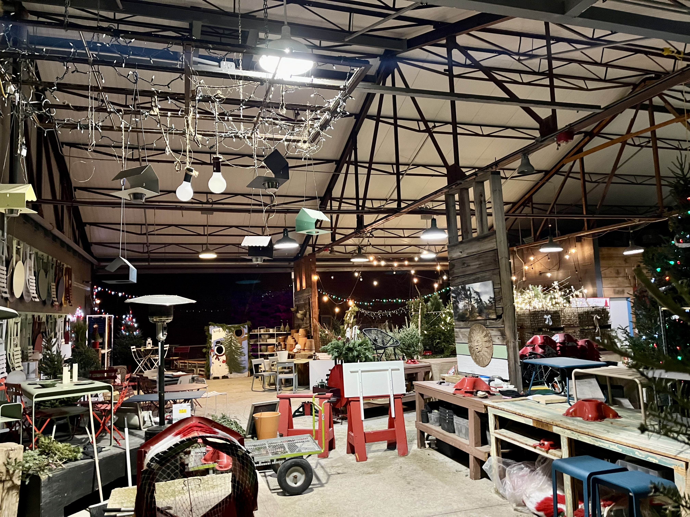
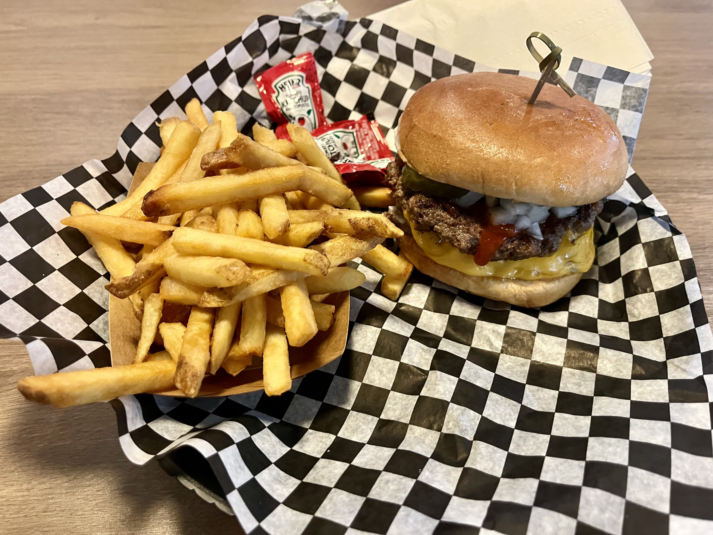
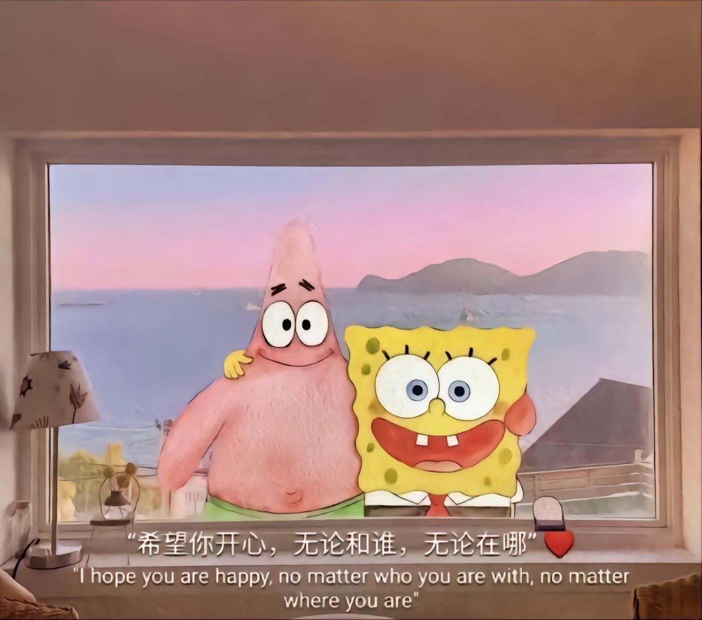
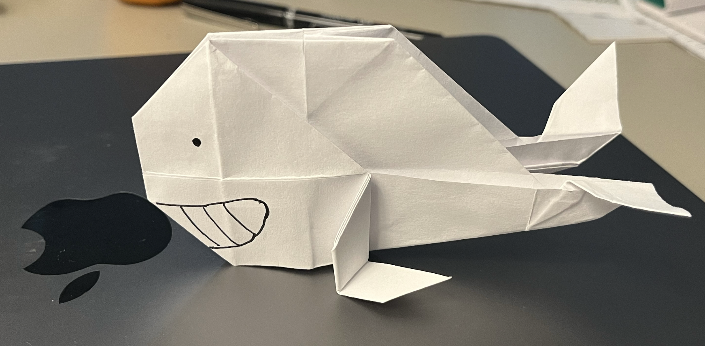
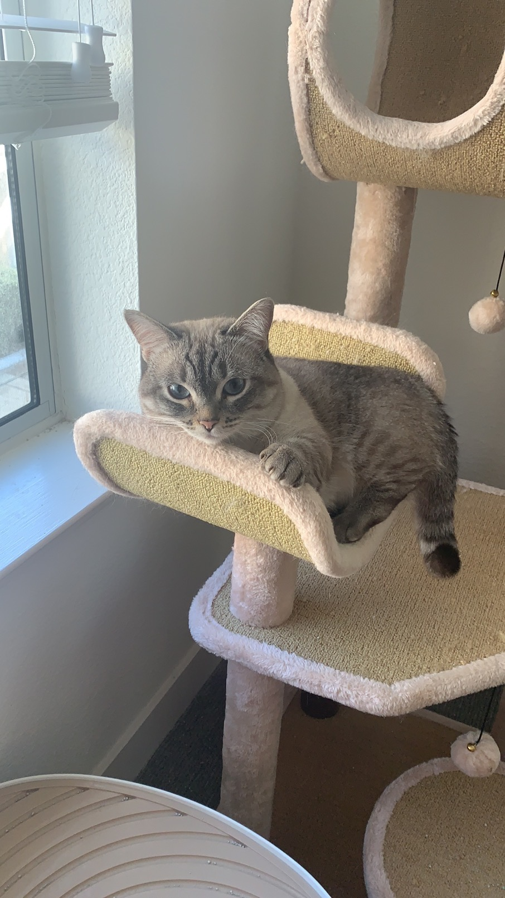
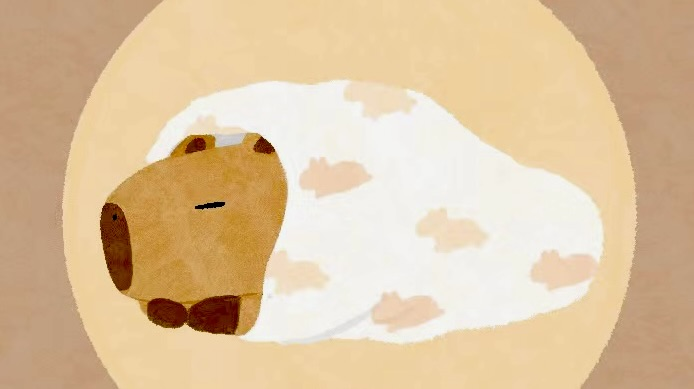
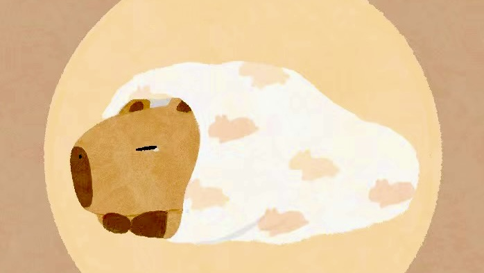
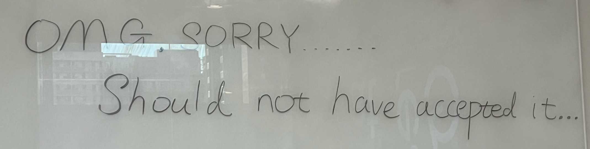

Jan/07/23
晚上和星星打电话
我们的对话简直是可以预见的，甚至打完电话我会脑壳疼也是会预见的
这tm竟然是颗和你讲现实的星，然后你要梦，虽然这种对话可能在我心里慢慢成百上千次
不知道啊，有没有勾起她的梦啊
但是我们还是打了电话，没人会错过给星星打电话的机会
有的人也许真的很一样，有的人也许真的很不一样
不一样到要穿上一件一件不同故事，然后说看，这是我这是你
一样到我们归根结底，都是故事后面的人，然后也许就有了信任
所以有一天，不同的故事，写出了之后不同的故事，我们都能互相欣赏
啊 我那时候显然没意识到U202住了六个野兽伙伴
我只是那天想记录一下 即便是伙伴搬走了 即便是视频丢了 即便有天我忘了 但是都记录下来了
我想去真正拥有某些事情的方式也许特别简单 就是给予
所以现在的话也很简单，没睡好就再睡一觉，很难想象有这么破坏睡眠的一颗星星
Jan/06/23
清风解梦 大风神力
Jan/05/23
“我还是忘掉了那些不愉快的事情，只记得那些美好的光阴。”
Jan/04/23
今天不太行，不过明天又是新的一天
In the long run, we are all dead
Jan/03/23
今天是加油的一天～
Jan/02/23
今天和朋友去个公司边上点心店，有抽签
我问店员，你们什么时候打开过这个签盒确保你的distribution是对的 ie 有一百根签
我其实期待她说一个月or一个礼拜数一次，但是她说从来没有
还问我是不是serious，我当然很serious，我刚抽完签啊姐
我于是提醒他数一数防止有人偷签......
感觉给注重细节的日本人好好上了一课
小时候我去抽签，抽不出来
我妈嫌我慢帮我抽了一签，甚至有点粗暴
佛祖灵签38签，其实我真的很想自己抽出来不想给我妈添麻烦
就像是在幼儿园比赛谁先穿好衣服总是没人关注我，或者我很容易分心
我也一直很困扰，为什么明明是上上签，却是大器晚成呢
我问我最喜欢的老师，什么是大器晚成，老师只说很厉害....但我想知道我为什么要等很久才能成呢
很怀念那个还想当宇航员或者足球运动员的我
直到很后来，看到的是居高声自远的我在想，到底要怎么样才算是大象无形，大音希声，大器免成呢
这段时间是算命高潮，前有面相大师388文字详解（但是俺木有钱），后有观音灵签92签
当然这个算脸的能给马斯克算我是服气的，稍微扩展一下，显然也可以包括外星文明
算命GPT应该快点在路上，我只想我的LLM能念遍全youtube的算命视频
Jan/01/23
90% 的人在一月就fail了他们的resolution
还不用算上观测者和被观测者之间的距离
也许平安健康绝大部分情况下是一种实践
去爱别人可能是实践和灵感对半分
而了解爱自己应该纯粹到只有灵感
那些细致而又残忍的边界上
还会有多少不经意间的涌现，或者坚定探索的勇气呢
DEC/31/23
今天出乎意料的下起了雪
回过头去，除了隐约两转细长的脚印
似乎连影子都要沉溺于这幽静
径绝踪灭 至生未忘
辗转于流年中可能或者不可能的地方
F3A4 F3E5 F3A4 F3E5
G3B4 G3E5 G3B4 G3E5
A3C5 A3E5 A3C5 A3E5
G3D5 G3E5 G3D5 G3E5
还是祝每个人，新的一年，都能顺利，能在这儿相遇，我很开心
happy new year
DEC/30/23
新的一年我一定会向前看啦
所以谢谢你充满我的眼睛
DEC/29/23
forget 能看成target...我最近这人
有的事情想要跑着去做
今天给妈视频了，听到了她的一些想法，和我一些值得提高的地方
卧槽 我的ee 和 wellness，让我睡觉前在搞下
算命大师显然解决不了我的烦恼
但是我是早上8点18分生的 1995 年 1月 24日 我觉得医院写这个时间的人应该是个财迷 没事我们都是财迷
DEC/28/23
有时候感到自己变笨了...想点东西竟然会脑子疼，当然本来可能也就不聪明，所以不一定是坏事
晚上还是很饿很饿，基本上把一年的零食都吃了，不吃东西的话感觉很难开心起来
翻到了一本以前没看的书，叫做系统设计，听起来就“很有意思”的样子
不知道自己在期待些什么，具体是哪一天，哪个人，哪个地方，哪件事情
或者很知道自己在期待什么，只是不敢了
我可能一时半会摸遍全身口袋，也拿不出什么像样的东西
不过里面还有两件很珍贵的东西，支撑着我
天气很好，冬天就应该这样下雨，然后睡个长长长的觉
就像水獭一样，不管睡没睡醒了，都不会放手了
卧槽，明天我tm一定要办ee和报wellness，如果我做成了，can you celebrate
DEC/28/23
昨天和alex去攀岩认识ian
然后ian又带我们认识了 pasha celik
他们都比我小，alex 大二 ian大四， pasha 23岁
pasha饭后带我们参观了他的公司...
他是个ceo他的公司duang是做类似麦当劳+中国asian杂货店，从中国的胡润融资了3-4m
垂直有tech， food 和 grocery 还有自己的仓储和物流，看了他的办公室，一个原型店，还有他的仓储
他说这家店大概八个礼拜可以开起来，（貌似已经筹备了一两年了）
在办公室露台，磕着瓜子，吃了奥利奥cakesters，我发现我抽了大人的pocky简直是非常熟练了
他说14岁从麦当劳兼职开始，到18岁成为最年轻的区域经理，到20多岁有了自己的startup
听他聊了很多是他如何和中国官员企业合作沟通，怎么融资，解决内部问题，在多伦多有哪些关系等等
也看到了他和ian之间的矛盾，一个是嫌对方聪明但天真，一个是嫌对方太能说会道，又有多少真话，成功的太快
不过还是被这位加拿大人民的行动力极大震撼到了
Tomnoob也表示很想创业，所以要实干起来！
Tomnoob表示很忙，今天成就就是换了个被套，睡觉头可能就不晕了
DEC/27/23
谢谢～
DEC/26/23
君色に染めてくれよ
DEC/25/23
卫兵躲在雾里
安静到听不到心跳
没有袜子或者巧克力
有点勇敢也有点喜感
他想到了不让他在床上吃东西但保护他每一个小小心愿的家人
他也想到了很多甜腻的时刻和一只和他很好的猫
天气冷了热了他胖了瘦了
只是站着或者偷懒
那些东西就穿过了他的身体
也许他们在相互守护
没有可口的药水能让他突然变成父亲
他笑着听不清树林的聊天
因为他和自己撞色了
DEC/24/23
透明橱窗的后面，把自己的心情摆着，不知道是聪明还是愚蠢，纯粹还是矫饰
这是一个父亲的节日，很勇敢的节日
再温柔美妙的夜晚，无论如何都有一丝寂寞
但是我想每天都是圣诞节，也很好吧～
下次记让寄居蟹们待在他们家里吧，很喜欢的话，我会带你去看很多很多次，（圣诞节被抓走。。。。）
DEC/23/23
some day you step into a puddle
is a little wet vibe
next time you skip over
DEC/22/23
每次看到weight decay就有点晕眩，谁能知道这玩意是贝叶斯+MLH+高斯一起搞出来
多伦多是不是没有牛或者鱼，我为什么80%顿饭吃到都是鸡
“飞机起飞有一个术语叫做V1速度，这个速度将会决定飞机的命运，如果低于这个速度，你可以取消起飞，
但是高于这个速度，就没有退路，无论如何都要起飞，人生中或许也有一些，类似这样的关键时刻，你我必须做出决断”
很喜欢这句话，喜欢让惯性影响未来，如果有一件很想很想做的事情，那就一定要做不是吗
DEC/21/23
片っぽ
很喜欢这种含蓄或者模棱两可的词/表述，语言确实很方便很重要，然而不是所有事情都是讲的明白的
所谓会心，可能就是有时候抽出手来抓住那一丝游离的风吧
原来今天晚上是冬至啊 那看来确实得好好睡一觉了
冬至大过年，现在只想明天早上吃饺子（迷之想起了一些个饺子和手抓饼包子...，南方人确实吃汤圆or汤团，但我平时经常吃吧
开会同事说在巴西 不是很理解同事的想法，夏天在北半球，夏天又在南半球，这是多怕冷 我只想听到同事说他在南极wfh
虽然我也很怕冷 但毕竟我是冬冬吧 不知道咋想 只能说 今年是厄尔尼诺 暖冬也是冬？
そっと温もり感じた じゃ お休み
DEC/20/23
yoink = 拿来吧你
DEC/19/23
风花雪月，雪景难忘
困于大雪之中，未必每次都有他人解救
（虽然没有99我们可能也不会去那么下雪的地方ORZ，当然了没有99这个世界完全就是另外一回事了）
觉得每一次相遇都是那么奇妙，感恩每一个拥抱给人的勇气
所以到了要解救自己的困境，还是会相信自己
一路走来磕磕绊绊，昨天也许还在犯错，还没法达到自己的期待
但是今天还在这儿，所以我们加油～
DEC/18/23
永远有多远，光年是几年
その孤独に互いの愛を知るの
总是被一次小小的失败或者成功困扰，以为那是自己开的花结的果
我想正因为有着平凡的枝叶，穿越不了季节，却要肆意得长向无垠，多特别的一颗树啊
 谁会拒绝support一只穿着美人鱼costume的考拉呢
谁会拒绝support一只穿着美人鱼costume的考拉呢
 谁会拒绝考拉帝国呢
谁会拒绝考拉帝国呢
DEC/17/23
几个圣诞节的回忆好像一下子又涌了上来
我得坚强起来 说好要保护你和皮皮的
DEC/16/23
头还是有点晕，不过，谢谢
今天的话，除了必须做的事情，我准备当一天树懒/考拉
问就是年轻，还能睡，除此之外其实我一直都喜欢和别人比一天睡的时间谁长
比如豪哥也很能睡，我经常问他睡多久，迷之想超越他，我有时候也迷之反对你比我睡的好，后来才知道大大也喜欢睡大觉orz
中午吃汤圆，芝麻“黑心”的，我比较喜欢芝麻的，甜的早饭，饭团甜的，烧饼甜的，不是咸的不好吃，甜的更快乐
DEC/15/23
脑子疼了一个礼拜了，只想躺几天
DEC/14/23
实际是实际的似然和概率都是1
DEC/13/23
头还是有点晕，好想休息
我们的先验概率又是多少呢
如果天气不冷的话，圣诞节也不会是白色吧
他们有的一直很温柔，煌めいて，
有的感觉好像在被什么东西追着跑得巨快😂，儚い，也许赶着坠入凡间，也许我们都在氧化自己
我又像他们许愿说，只有当我彻底闭上眼睛的时候他们才能落下来
你看见了吗～

DEC/12/23
梦真的很神奇， 脑子也是
从来就不是你控制你的脑子，而是你的脑子，脑干控制了你
也许我们白天做梦，晚上清醒，或者你一天都醒着，只是有一段时间，或者你一生
总之REM真的很神奇， 也许强化学习和REM有一些类似，
我觉得NN还是没有吧脑干那种协调神经递质的作用类比出来
数据朔源可能是一个很好的方向，但是没啥好的算法
DEC/11/23
我一定是触犯上班的神了
上次把加拿大licnece -> license , neiborhood -> neibourhood, 搞得全加拿大人民看不见车牌社区
今天给80000人发邮件，卧槽，svp都来了，吓傻了，老板都吓傻了
因为我们有个Google groupsync坏了，导致我们的邮件列表里有全公司80000（+ext）人
不计其数次的把service的db搞坏
礼拜五还要code freeze launch mvp.....
这班真没法上了，（copilot：我要去找个地方躲起来）
DEC/10/23
今天好像突然对人生有了些新的感受，是不是青春离我们已经很远了
我总是很难做一个长远的承诺，总是进几步，退几步
总是说着当下要很努力很乐观，想把自己包装成一个无所不能的形象，实际上却是很敏感很偷懒很弱小，感觉到头来好像只能留着些遗憾
很复杂的情绪
但那是错的，我不可能装着遗憾去找你，我使劲在包里翻着你留给我的那些不可名状的宝物
也许人生就是要结一次婚，生一些孩子，上一个好班，做成一件很成功的事情，给别人留下些什么，孝敬父母，看一次最美的风景，做着自己最喜欢的事情，等等，然后笑着离开
总是互相鼓励着，拿着既定的蓝图，好像大家都会走在这条看似简单的路线上
嘴上说着简单，实际上总是担心偏移找不到自己的位置，害怕伤害自己别人，压抑着
拿着人生去衡量一个人，拿着高度去衡量人生，拿着快乐去衡量人生
我想最重要的事情显然不是要去到哪里
所以我收拾好的时候，会去找你
DEC/09/23
可能是皮皮
ピッピは私を待っています 諦めてはいけない
DEC/08/23
過去に戻せない でも未来は変えて行けるから
感觉最近有人老骂我，打喷嚏都是两个，量子纠缠了
DEC/07/23
就算在梦里，很多事情也不再是理所当然了，常常感觉到担心
仿佛两个人的步子又渐渐重合在了一起，记得以前的很多游戏，总是想藏在彼此的身体或者步子里
喂，别说丧气的话行吗，你今年才几岁啊
如果一个月三个月半年一年很多年，或者一辈子都做不成一件事
都没关系
信じたい、気づいたからnothing but you
だから、私を見てください
DEC/06/23
老板的理解能力是个概率模型，奇形怪状，显然是不是一家人不进一家门，
经常是我standup说一句话，只要这句话能和她脑子里的事情有60%重合，她就会说tianqi你来搞下这个...
就好像我说我昨天洗了个碗，她直接说让我去洗厕所了，我能跟的上她的思维，但是具体我们真不是在讲一个事情啊
件件有回响是不可能的，我们都是只要传达了，之后具体都可以滑水的
最近搞烂的东西实在是太多了，不过有得搞还挺好的
DEC/05/23
不想粉饰自己，我有太多自私懒惰懦弱的地方，导致错过很多次
不知道还有多少次想放弃自己的时候
但是想着天空就在那片云层后面
我得再坚定一些
谢谢
办公室有个人只吃散装零食里的巧克力 然后把剩下的坚果和果干放在外面
我只吃坚果和果干， 然后把巧克力扔了，哈，真的好想认识一下那个人，了解一下他的故事和把剩下东西放在外面的想法
他会不会吃我要扔掉的巧克力呢，我敢不敢吃他的坚果呢，巧克力不会像坚果一样潮掉吧
或者我和他把剩下的再混合一下，再倒回桶里，
这样我打一份坚果一份巧克力，吃一份坚果，
他一份坚果一份巧克力，吃一份巧克力，
倒回一份坚果和一份巧克力，也不是算不清楚，效果就是和我们打一份坚果一份巧克力然后分开吃一样，
但是味道不一样吧，就和泡面一样，靠的是和空气接触的时间来决定味道
或者至少吃到半桶前，我永远吃不到他剩下的坚果
总之虽然他可能是个很奇怪的人，不过很有意思
DEC/04/23
start my day with two dreams, one is about you, one is about you
DEC/03/23
悲しい夢をまだ見ている
DEC/02/23
以前好像是说睡的比较多冬天，总是感觉最近睡不好，掉头发....还好能种头发，和我秃了的舅舅去说不定能打折，不是那个99
晚上睡的特别晚，因为在dc里，人还是很幼稚，说着一些不成熟的话，想做不成熟的事情
起床后就很懊恼。。。或者说很害怕，自己又错想了一天
后来想了一会，就好了
现在的话，我想要我身上有要更多你的痕迹，一直担心说，如果全部是你的痕迹了，我还是我自己吗，或者如果没有做成一件什么，这样还有意义吗
当然做出这样选择的逻辑还有点不通顺，具体是，这可能也是我能选的最好或者稳妥的方式了，过去几年，我身上你的痕迹，一直帮助了我很多，所以我要相信然后，谢谢
害怕，执迷于一些过去和我们之间还剩什么的矛盾。害怕喜欢成为痛苦的根源，想着喜欢和痛苦总是交织。（很幼稚是吧）
我想着，这些情感应该放在的位置，或者我自己应该放在自己哪里，我想他们更适合在一个地方，变成保护人的力量，和付出的勇气
这样就可以一直喜欢一个人，一直保留美好的东西，不论在哪里。这样我也不会害怕了
我觉得这应该是我想要的自己
谢谢你一直相信我，我想也许我们还有默契吧～
DEC/01/23
早上就做梦了，很长的一个梦，好累，梦见三天，在第三天和第一天重复同一件事情的时候醒了
就因为梦部分是人的潜意识，所以总是喜欢用潜意识去解释梦的大部分
那些在梦里追逐的东西，真的是我想要的吗，真的是我的意义吗
对很多事情都很困惑，具体到一件事，到一个模糊的人，到一个不具体的抽象
一些习惯性的解答好像在某些问题前开始不起作用，证明或证伪
我觉得也许就是要抛开天赋和努力，或者说抛开一种寻找目的
前段时间被99说，总是太快就想要一个结果，我在简化一些事情，比如听99的，选择99成为我的理性的一部分，不过他好像也会有不理性时刻，哈哈
好像还是会被没有结果的那种虚无恐吓到，很害怕
咱就说好了，12月要学一点（copilot：日语）能自己定义的东西
很困惑的东西的话，慢慢的，轻轻的，想
NOV/30/23
团子爱好者去了一个很无聊的年终聚会，被冷餐吃傻了，全是cheese，还有一个假的赌场
团子爱好者表示要睡眠一下，有点困，因为状态不太好的时候就要努力调整状态～
🍡 += 14， --🍡
NOV/28/23
愿人间占得欢娱
NOV/26/23
届かない
NOV/25/23

整点薯条，上次就路过这家fatburger，这个店里全是印印，当然印印蛮好，我可能对这源自LA的汉堡店有不同的期待，LA只有墨墨
看不清里面的招牌，着实尴尬，记不得以前最喜欢点什么size的了，然后随意点了个别的汉堡，我怎么记得 xxxl是1lb牛肉，至少每个size肉量不一样是他们特色
记得westwood那家店，在一个转角，我还是很喜欢的。其他店的话carl.jr 吃的比较多，fatburger也蛮多的，inandout也挺多的，只有fiveguys只吃过一次
记忆里的店很小，说不清楚的风格，不锈钢的椅子，感觉比inandout上年纪，每次吃其实都很开心，属于那种小众汉堡，蟹堡王原型
多伦多这家就有点没啥风格，昏暗风格，不过一个人吃，刚刚好
我问理发师，你们不是最相信星座什么的了吗，她笑说日本人不表里如一，说他很real，我想她一定很喜欢安室吧
还顺带去了超市，买了tirol的巧克力，和 年糕
这是多伦多我们为数不多去过的地方
tirol 120年了，记得那时候我们满满一小盒，你帮我淘宝买的，一开始码的整整齐齐，放在厨房台子上，还全是各种mochi的，想好说一天一颗
人生真的很神奇，一种小小的食物，巧克力，可能就贯穿了一生，假如老爸小时候没买tirol
还买了年糕，就是那个过年都会买，都不会吃的，年糕，在elcerrito的超市的年糕，元旦积灰食物
NOV/24/23
问题，错误，其实一直都在，到底是在你可以尝试解决它的时候他出现了，还是它出现了你才能解决它是个很复杂问题
人也许不能像机器一样计算，机器也没法完全模拟人思考
不管怎么说，很多时候都是为了那短暂的只属于自己的结果，努力着，我想这样很好，既有风景又有目的地
最近不知怎么的，日子还是一天一天的过去了
它到底是很快还是很慢，我到底是希望它快一点还是慢一点
有的时候看到自己小小的变化，因为侥幸又很难过，一些定下的目标，实现起来却很难，一些之前的问题，解决起来特别麻烦
推着自己往前，宛若在路上我推着你让你走快点，不想对任何事情妥协，想让我心底的你给我最多，不敢再放开了
希望我们，渡人渡己，身上粘不住风浪，却映得下星晨
NOV/23/23
感恩节，醒来之后强迫自己再睡一下，有班不用上，昨天睡太晚
很快就进入REM了
梦见了奶奶，我问奶奶还认不认得我，奶奶喊说认识的 冬冬啊，我一瞬间就被抽醒了，像被吸入了一个现实，回到了床上
奶奶不可能再认识我了
我还是叫冬冬，希望能得到一丝庇护在冬天
零零散散又梦到了很多，梦到了讨厌的集体，而我没法选择的成为了这个集体的一部分，梦到了不如意的琐事
梦到了很久没见很少沟通的堂哥，堂哥带着好奇和不解，我抱着他的手臂躺在床上，如同小孩一样，解释或者掩饰着我，我们，我的选择
又梦见了妈妈，回去参加家里的聚会，很多远房亲戚，给爷爷留了双筷子，备的菜有我最喜欢的乌米饭，去的酒店，是我不喜欢的那种档次不上不下的农家乐
我妈竟然还是主持人，我告诉他，我吃过了不饿，倒时差很困，想回去睡觉，我妈言辞说，至少至少要做做一个正常的出现，我还是很模糊
然后梦见自己在饭店外淋着雨，走着，爬着，身体太大了，衣服太大了，碍手碍脚的，甚至碰倒了什么出发了警报
现在想想我妈的名字叫言午，可能不无道理，言辞，违仵
我在我脑子里搜索着你
我好像起的很早，你还在睡，我想给你去买早饭，我喜欢的早饭，梦里的那条街，就像周天小时候给父母买早饭那样，我想惊喜到你
阳光没有穿过藤蔓，下楼，没有梦里的那条早点街，只有陌生的城市
我说也许陌生的城市也挺好，至少我还活着
我想，只要一直我很相信一种不存在的关系/纽带，就可以很爱很爱一个人，我很沉迷沉迷于其中
你说过，你记不住梦，有一个梦倘若给你很强/离奇的印象，你总是记下来。你夸我有的地方记性很好，有时候还是会怕我有一天全忘了，不管是物理上，还是心理上
NOV/23/23
感恩节快乐今年在修自己的bug～去年舅舅做了一桌子好菜，前年可能舅舅还没来准备找工作，大前年可能你在问我为啥不出去玩
大大前年可能又是在找工作，大大大前年找intern，大大大大前年找intern again
大大大大大前年在学cs，之前有点忘了，大字太多了水了一期
NOV/22/23
会议室竟然有一股petco的味道，怀疑进了豚鼠草料窝
NOV/20/23
ゆっくりと
NOV/18/23
そっと
NOV/17/23
意识到离得最远的其实是自己和自己
所以想要赶上自己的话，还得再努力一点
像别人学，和自己比
期待人生要和我一起呈现一个什么故事，不管在哪个点，都要做最大的努力，最好的准备，最自信的自己
那今天也要努力靠近一点💪
NOV/16/23
昨天沙拉里吃到颗很变态的洋葱，吃的时候就被辣哭了，然后连着两天嘴巴吃不出味道，只有痛...
假如那是一颗好洋葱，那有可能我又染上什么诡异病毒了，所以最好那是颗硫化物超标一千倍的变态洋葱
NOV/15/23
做了个噩梦，但是意识到这种可怕很假，就醒过来了
喜欢沉浸的感觉，不过不想分不清主次，要去的地方总有个着落吧
这件衣服上竟然还有你的味道
抛开这件衣服不谈，神奇的事情是，很多ong臭残留，经过一段时间就变成了很好闻的味道
正好是初三,三日月
那我还很有电，不用担心～
NOV/14/23
今天很热闹，现在办公室里有人在我后面换玻璃，想早点睡，不能像以前一样了
NOV/13/23
天气不是最冷，而且阳光正好
NOV/12/23
我的V1speed又是多少呢
NOV/11/23
Waiter: "We have vanilla and chocolate today."
Ken: "I'll take vanilla."
Waiter: "I almost forgot. We also have strawberry"
Ken: "In that case, I'll take chocolate."
NOV/10/23
眼睛就是那么神奇的东西，一个人的心也许摸不着，但总是透过眼睛，表述着什么
往往是，不论一个人持有什么观点，总比他没有思考来的好很多
眼睛竟然还要被用来抗争，以陷入和坠落不同的姿态
天没亮的时候我想着你的眼睛是怎么样的
那时候你晚上看不清，开车，我还和你吵架，实在是太自私和过分了，我错了
盘根错节，可怕到让我失控，有次我和你吵完，我自己回去我也看不清路了，差一点撞到了隔离带
你也不止一次问我，你爸眼睛不好，你很担心，我冷漠得让自己害怕
现在慢慢理解了你的心情和意思，现在也开始相信自己的眼睛，去抗争
我还是有点害怕
不过早上醒来的时候没那么怕了
NOV/9/23
昨天好像下雪了
身体里的grizzly开关被打开了，早上完全起不来，反问自己，哪有熊冬天起床的
Davis的冬天也挺冷的，不过最后不是熬一熬也过来了吗，还遇到了朋友
那时候的努力，小小碎片，好像闪起了光彩
有时候很担心的掐着手指，第三个男女朋友，第二个命运之人
我可能没以前聪明了，但是看着自己被2了3了困住算不出来的样子自己都觉得很搞笑
不过如果觉得自己很搞笑的话，应该还没有变笨吧
NOV/8/23
承认自己不完整真的很难
想把所有不曾改变的倾注于你，把所有努力的尝试留给我们
NOV/7/23
あなたがいる だから僕は踏み出せる
君とじゃなきゃy意味がないんだ
我一直很喜欢吃柿子，第一次吃的时候就被甜味或者就像你说的像QQ糖所吸引了，秋天的话很多大人都给我买柿子
不知道我有没有和你说过，去年吃柿饼，你到处找好柿子的时候，其实我很开心
よく似た者同士だね
我好像不敢告诉你，就像是有的时候我说哦，你为什么会抄我，也许是我们喜欢了同一个东西，衣服或者颜色
我渐渐的刻意区分开我们，我太想和你成为一体了，以至于有的时候我害怕那种契合的不真实，害怕那种任何的瑕疵
我解释不清楚，甚至有时候想我们是至亲或者兄妹就好了，想着这样也许就可以解释我们不真实的相似和痛苦的不相似
僕わなんて 君わなんて 未完成
不过还是非常非常谢谢你的信任，就像我闻了下牛奶，我自己都不知道是坏没坏还是逗你说坏了，你马上就将信将疑了我的狗鼻子，直到我们把它彻底放坏的那天
也许我不再喝喜欢的牛奶了，也许我也会瞎说自己最喜欢的水果
但是我也喜欢上了橘子
NOV/6/23
祝，你身体健康，特别是肚子
NOV/5/23
勿念勿忘～
每次坐过山车完全没有感觉，就像看脱口秀一样，当我知道一件事情是为了让你怎么样而怎么样的时候，总是因为不是内驱的而感觉不到
不过还是很喜欢游乐园，把很多欢笑和故事都留在了时空里，谢谢朋友们和我们
所以我是也想去游乐园了吧，有想去的地方，有想念的人，这样不是挺好吗
NOV/4/23
做了一个很长很长的梦，然后我把他记住了
“
爷爷奶奶经营着一家小的农场，和一家福利学校。我有时候去帮忙，主要是带动物去喝水，动物的话，有牛，狗
小时候，不是很喜欢这种尘土，烈日下的感觉
爷爷没了，奶奶住进了医院，没有人在打理这些动物了，我喜欢的牛，动物渐渐被卖走，福利学校也要关门了
我来到了半山，处理剩下的东西，住进了爷爷奶奶昏暗黑漆漆的公寓，躺在爷爷的床上，打开电视，放着可有可无的，学习音乐或者别人的舒缓露营记录
我没关门，我以为老式公寓里只有这一户了，动物们被养在楼顶
晚上仅存的几只牛里有一只竟然下楼来看我，虽然是中等体型，过那个小小楼道的时候还是显得很大
我明白了她的意思，她想看看主人好不好，她担心我，把她送了回去，算是和她认识了
又过了几天，她又来找我，这次很焦虑，她领着我来到厨房，我在地上找到了一个她的”耳环“，一个检疫牌子边上的圈圈
大概是上次来的时候忘了的，我给她带了回去，我和她都很高兴，她比我想的还要通人性
我开始焦虑，草料不多了，水也不多了，解散的日子近了
幽暗的楼道里，对面这户人家，对我在楼顶养这些动物颇有微词，指责我没有能力的话，最好早点处理好，不要影响到了别人
我控制不了自己，我咆哮道，你没看到我刚刚失去爷爷奶奶了吗，我会处理好这些动物的
又走出来了一户人家，打着圆场说道，动物都卖的七七八八了
我没管了，厌倦了的人际关系，领着她回到了楼顶，我拍着她，至少我还有牛牛
最后一天，我去的时候还是在担心草不够了，牛牛也许可以吃地上的草但是水不够了很棘手
福利学校解散了，老师把学生召集起来，我没意识有这么多学生
老师说”平时老师照顾大家，挽救了学生的生命，但是也有疏忽的时候，害死了某位同学，等下交接的时候警察叔叔来了，大家就不要提起那件事了“
因为我的身份，不是学生而是福利学校募资的人，我没多想就直接说道，”不行，一件事是一件事，同学们和警察就如实回答就行了“
很复杂的情绪，面对着年轻的老师和年少的孩子们
之后我和孩子们开着玩笑，孩子们都很喜欢我。我很自责不能完全记住他们，只能记住几个出跳，帅的好看的孩子，绝大多数孩子，我都没关注
只剩下零散的动物了，楼顶晴天尘土，一些草，牛牛和另外两只小牛奔向我，本来可能有几十只
我很开心，不过还是要带牛牛去喝水，最近的一处水源，晒干了污染了，但是牛牛还要去，有点拉不住，好不容易算是拉住了
我带她来到公园的喷泉饮用水口，公园很精致，我和牛牛格格不入，但好像这是ashland，水是臭的，路上人看着我拉着一只牛，我和牛牛看着路上的人
天色渐暗，风很大，我开着手机地图，牵着最后三只牛，来到在山里hiking找水，因为有牛，所以勇敢了一点
我想如果有牛，我为什么不骑她而是要走路呢，我害怕牛牛不想被我骑，我们是平等的，就这样走着走着
渐渐的我的牛牛，变成了一匹骏马，比我大了很多，那种只会在电视里出现的美感
而我也从山里来到了最大的马术比赛的赛场中心
我骑着她，做出了人类设计的动作，维系着人类看不到的纽带
“
NOV/3/23
channing的房子很小，我断断续续住过几次，放不下什么东西，有张黑色的掉漆的宜家椅子
那段时间算是我探索伯村dt比较多的时候，你知道的，伯村dt是个很奇妙的地方，我们不可能讨厌的起来
你在那儿住了蛮久的，直到后面jr念书的时候，我们还去她家玩，晚上很安静
也许也有过很多困难，总是坚持一下就过去了，谢谢那些朋友们给我的鼓励，也谢谢大华的果冻，饿的时候。当然也要谢谢你了
渐渐的也许我已经学会了如何去积极得面对困难，也学会了在奔跑的时候欣赏沿途的景色
这一次，下一次，我都充满信心
NOV/2/23
梦里我争辩道，我怎么不了解你，我都知道你背后那块胎记
我们真的了解我们自己吗，看不见的地方，总是好奇得透着各种介质去看
讨厌的喜欢的结果也一直都是自己
说这样的话难免过于自我，也忽视了人和人的交往
轻舟渡河，光芒汇集于海洋
那今天也要加油了
NOV/1/23
🐝
離れても 貴方の 幸せ願う
10/31/23
Maybe we're not perfect, but I'll be damned if I ever leave
10/30/23
我变得很大，包围了城市的上空，放眼望去，全是风景，我们的，不是我们的
10/26/23
kimiwahouseki
君は宝石
10/24/23
我想那时候我不得不走了
我以为是我不够喜欢你了，所以很多事情我都变得异常的冷漠，很多事情走下坡路。我们没在能结婚的状态。我搞不清楚到底是喜欢你还是喜欢我们的生活方式，钱，便利，朋友，身份，欲望。
我们以前是在为某些奋斗，我甚至以一些小聪明，沾沾自喜。等我意识到我已经分不清究竟喜欢一个人，还是喜欢生活方式的时候，我很难过
我不想被外在的东西左右了情感，那时候我也很弱，逻辑上抛不开外在的东西。是不是我不够喜欢你这个人，但是你为我提供了很多东西，所以我对你的感情偏移了，然后我做不出判断了。
我那时候想法很垃圾，哦，可能是我不够喜欢你，也许从一个足够足够高的起点开始，这些就不是问题，可以轻而易举的结婚，做承诺，办身份
然后呢，然后继续迷失吗
我想不清楚，我知道不太可行，但还是急于找到一个解去证明一条逻辑
我想底层的逻辑还是，我不想害我们，稀里糊涂的，最后把最好的感情变成了灰烬
我不知道为什么感情会变淡，我很痛苦
所以当我知道，不结婚就会失去身份，你说要结婚的时候，我不想害你，我也不想让其他的东西左右了我们的感情，我选择去了加拿大
到最后那天，你问我，我脑子里想的就是，既然已经到这里了，喜欢着，痛苦着，不解着，那就分手吧
很高兴我们没选错，谢谢你相信我，我选了一条看似更难的路，后来我听说如果生来高贵，选不好，要选难的路。我们生来高贵
他们说聪明的人在乎边际，去一个陌生的地方，确实是很大的改变，但是实际上我也很高兴的点是，这似乎也在我们实现目标的切线上，有的时候，有的地方就是不可导的，所以切线突然跳跃了
所以对于跨过了一些陷阱，我很高兴
后来我也渐渐想清楚了一些事情，喜欢一个人不是外在的生活能决定的，因此喜欢一个人，不是要从一个很高的threshhold起来，爱也许是两个天生有缺陷的个体的契合吧，无所谓一开始的完美，也不在乎一开始的高低
看到你很开心，我心情很复杂，归根结底我希望你开心，我知道也正如你所希望的那样
他们说，真爱会为付出感到幸福
那追寻真爱的地方也渐渐有了方向，看的到了一丝光亮
我一定可以坚持，内心深处已经有了勇气的源泉，你，我们的故事已经充斥了我身体的每一个细胞，我可能难免悲伤，但我想我已经越发可以水静深流了
如果不能从容放下，难免被说的心理扭曲，难免被外界所影响，但是那些被说的被影响的看不见我们的心。坚持不等于扭曲我自己
那，我已经想好了下次见面说什么了
10/24/23
おはよう～
有段时间我们特别喜欢模仿印第安人おおおおおおお
这两天突然很热然后又要冷下去，多伦多的天气可能是比不上加州的，但是里面的人还是可以努力的
我们是冬天认识春天在一起的吧
渐渐的开始期待明天，或者是每一个春夏秋冬
那今天也是要加油的一天
 时间好快啊，那时候的两个小孩，现在都长大了
时间好快啊，那时候的两个小孩，现在都长大了
而且都还在长大，very very good
10/24/23
虽然似乎没法再带走一些东西
但已经把最美好的回忆藏在了时光里
那就祝你以后都能心怡啦, 那个我最喜欢的人～

10/23/23
悲しい声で歌いながら
いつしか海に流れ着いて 光って
あなたはそれを見るでしょう
10/22/23
静下心来，你太浮躁了
嗯，很欣慰有的小地方已经有改善了吧
虽然好像有个巨影，从小你就是最勇敢的那个吧
10/22/23
嗯怎么说呢，感情有的时候也挺垃圾的，我从来没有那么强烈地没意识到如果有开心的时候必然也有悲痛的时候这件事情吧
所谓的信任或者谎言，都有它的局限性
她想教会我一些什么吧，不过很可惜
我就是我，我就在这里，我要有我的框架
她声势浩大，带着她的帮手，恩威并施，我不能被她摧毁，我要守住我灵魂上那一丝光
本来的自己已经很好了，不做借口，只做勇气
我知道我不是一个人
10/22/23
昨天有点偷懒了，今天麻烦补一补，今天要加油啊
如果想到一些以前的事情，还是会很懊恼的话，说明白天不够努力吧
梦见了你养了一条柴，牵着一根很强的红色的狗绳。狗子 你 xkx都渐渐的接纳了我，我很开心，我们也都很谨慎
我可能得再睡一会，昨天睡的挺晚的
你说你知道我送别人花的时候难过了一个晚上，难过了一晚上，你知道我现在有多想多想回到那天你边上陪着你吗
慢慢的我也体会到了这种痛，这种不是在心上的痛，我身上每一寸为你保留的位置都在痛，我好像变成了两个自己，那属于你的一部分在呼救
我不想你再难过了，不管哪个自己，我不会放弃我们的感情的
以前我可能 不明白 信 的含义，他可能不仅是一种载体，私たちを信じて
风很大，卷着我的思念，想着，让我们充满每个地方
10/21/23
有很多很多话想和你说，有很多很多问题想问你也想问自己
嗯人也要往前看不是吗
我好像前面看到都是你
我好想你
我知道该怎么做的
10/20/23
今天下雨了，あきあめ，一些以前没有的风景，君に伝えたい
同事Dmitry老婆要生小孩了，真为他们高兴
下班走在路上，好像看到我们小时候
你总说小时候的事情你忘了，看过你小时候的照片，感觉你是有点吵的那种，表情很多的样子
我小时候的话，应该很腼腆，表面上很努力的讨大人喜欢，然后一转身就去搞自己奇怪的事情去了
虽然我们小时候应该没见过，但好像还是看到我们就站在彼此那边
10/19/23
有时候也是很生气的，然后慢慢的看到以前的人和事情人就平静了下来
以前现在，有的事情总是很疑惑，当然了我对自己都蛮疑惑
今天早上梦到想到，以前总是说，因为我已经这么做了，所以我要继续做一个什么事情
总是从好坏的角度去做判断，也许错过了转身。假如要做一件只有自己的事情又怎么了呢，要活在当下，做自己觉得对的事情
我想从成长的角度来说，我每次都要轻装上阵，把快慢甩在身后
想着过去的风景，想着你，想着自己
步子轻快了起来
今天用ue的时候发现ui变了，第一次用ue减价那个koalat的milkyway银河不知道你还有没有印象了，没摇匀的话齁甜，甜度报表的一些时光
10/18/23
做了一些梦，梦到了删相册，嗯，也许人也可以把回忆或者感情不管好的坏的根据现在的情况忘掉不是吗，或者至少是可以删改一些
现在想想，你和我说的那些让我从感情里学的东西很多都完全没有一点道理
到我这边，还真没啥道理，我想感情就是感情，什么味道都有
当然我也明白我们都是叠加的状态
正因为这样的叠加，去抓一条逻辑不一定能得到一个像样的结果，但换句话说，抓哪条逻辑又都可以
什么东西能穿越迷雾呢
千丝万缕，也许是我们身上只连一条闪着光的线
抑或是每条线都闪着光，时间给人答案
那祝我们将来选择了，爱就爱得轰烈，恨就恨得刻骨，忘就空白
我想选择的 == 我想你选择的， 反之亦然
不过我们至少可以勇敢得不怕错过了吧
10/17/23
休息一天，今天不营业
10/16/23
做了一个梦
“梦里你向我靠近，我一下子紧紧抱住你，嚎啕大哭了起来，所有的委屈都不知道从何说起
几秒过后，你红着眼推开我，让我只管努力，其他的交给时间”
嗯，好
记得最早的时候，你有一个很难看颜色的书包，有点金，又有点白，又有点土，上面还有个带毛大猩猩
但是它好像很能装东西，装满了一些我们的希望
早，祝你心怡
我想我有时候应该把这些回忆藏起来吧，现在拿出来未免也太痛苦了一点
对没有激励的事情做出反应，多少有点违背人性了
既然有了目标就要好好做不是吗，总有一天可以把这些回忆拿出来的
反正我们都还活着～未来什么的总是充满未知
然后你还有一个鲸鱼的包，你蛮喜欢的，你没扔掉。鲸鱼很大，但是包很小
大鲸鱼加油把苹果啃了～

10/15/23
想到今天是我们分开多一天，心就痛了一点
不过也许今天也是我们相遇再近一天，我得准备得更好一点
早，祝你开心
晚安，不论在哪里，都祝你好梦
我不知道，明明你那么想我，却要推开我，我怕你不是傻子
嗯，可能我才是那个傻子。没法沟通，与其去猜，不如多从自己身上找找原因吧
我知道你有你做事的逻辑和道理，但没有人每次都是对的不是吗，这次我一定不会再后悔的，请好好看着我
10/14/23
早，今天也要加油~
想把自己的每个细胞都变的理智起来，然后用剩下的一点点不理智去找你
可能这个世界本来就不是两个人的世界，我总是太理想化的去align两个人东西
不管怎么说，总是要做一个真挚勇敢热情的人
讲不讲道理，我都想和你有最大的化学反应。当一些不显而易见的东西慢慢开始展现的时候，我很开心地发现我们终究是最契合的人
说不可惜不后悔当然是骗人的，不过好事多磨，时间也许会给人答案，在此之前，我会奔跑
10/13/23
早，今天也要加油，祝你开心
心好像要被撕碎了
我会选择坚强，也许你暂时给不了我信任，我可以相信自己，相信我们不是吗
归根结底，我还会一直坚持我所相信的东西。只是想到要把你剥离自己的过程有点痛苦。也许有一天我也会放下那些谎言，那些不信任吧。不过在那之前请让我耗尽全部。
10/12/23
早哦，晚上有点冷起来了，不知道你会不会想以前那个和你抢被子的人
今天也要加油鸭！
办公室楼下有家一芳，常年买一送一，但是很难喝。有段时间我们还是很喜欢杨枝甘露和大甲芋头鲜奶的，到后来那个plaza的小刘
我可能一个人不敢去这些店了
记得20年21年，你开车带着我去的那些次大华或者别的超市，现在我想想我应该最喜欢fremont blvd上那家，因为家
10/11/23
一个梦里没有你，带着和你的记忆，不管是回到过去还是未来开启一段人生，都觉得很勉强
另一个梦里我在流浪，找不到你快疯了
以前我总是觉得欲望能支撑的住孤独，现在我尝试着用责任去支撑这种孤独。孤独有自己的意义和美，也有他的痛
早，今天也要是元气满满的一天
开会开到一半，翻着去年快这个时候的聊天，还是不争气地哭了
哈哈，我今天可能不会想吃面条了
你说的，专心做自己目标的事情
诚如我不敢说一定会怎么样，我想我还有走下这一步的勇气
我也不喜欢踌躇，让我大步流星的把踌躇甩在原地
10/10/23
每个人都会选择对别人话的解读，只会听到自己想听到的部分，然后怀着感激很希望自我肯定，我觉得很好～说到底，人总是追求美好的
昨天why和我说的一些东西，慢慢的有了回响。我总是觉得他很成熟坚强可靠，忽略了他里面的那一面，我想归根结底我和他都很好，也都会很有方向
有的时候，事情可能就是想的太复杂了，我总说这个事情就是很复杂，然后把自己绕进去，我现在只想把自己解开
今天用了我们一起买的唇膏，上面有你的贴纸和你喜欢的颜色，我想到了那个地铁站。嗯早上尝试用一个手机下个软件，结果没有验证码
晚上看到b站有人在吃面条，想到你以前最喜欢吃包员外的牛尾面条，在happylemon边上，那算是我第一次知道你很喜欢面条，之前也有一起吃拉面什么的。后来的oknoodle和家里做的面条你都很喜欢。意面你也喜欢。
包员外肯定倒闭了，想想就很搞笑，我们能熬倒闭好多东西，嗯，说不定能熬倒闭更多不是吗。明天我得去吃次面条
很想你，也很想伯克利，想你那天挽着我。喜欢笑着的我们
晚安
10/09/23
坚持和信任赢得过时间和谎言
穿过千丝万缕，我看见发光的理智和神采
今天王弘毅笑了，听着这么复杂的策略树，但他也很生气，觉得什么东西能这么搞，我现在也觉得挺搞的～
谢谢你的提醒，做别的事情确实很难专注，有时候很伤心也不伤心，来自我们的秘密，嗯我要站在你身边，我会专注的

10/08/23
嗯，今天去了瀑布玩，第一次见到了王弘毅的女朋友陈叶，很开心，碰到了初中时最好的朋友
想到了我们第一次去vegas，你陪着我吃各种怪怪的中餐Popeyes，我总是控制不好脾气，打牌，但是你从来没怪过我，我想你心里觉得我不坏
很怀念那个时候
我想现在很多时候我只要确认自己的心意就行了，其实这不难，你把我放在了一个很简单的位置。我只要确定认定你就行了，其他的都要克服
也许你却在一个难题里面，每天都要看到我们的痕迹
望着彩虹桥对岸的红绿色信号灯下的边境线，我陷入了思考，爱能跨过一切的不远万里嘛
我想爱有一千种形态，有的人说它是被主关发起者定义的，有的人说爱是一种感情的交互
我爱你的方式，是我想每分每秒都确认我喜欢你，希望你一直开心快乐，在你周围haunt你～
晚安，最近尝试给你写点东西，情的爱的，耳朵听了都起茧了
瀑布的话，确实有很多彩虹，ice wine也不错，好想给你讲why和陈叶的故事，他们应该算是我磕的唯二的couples之一了
编织的美好，终究会灭。野火燎过森林，春天肆意的活着
嗯，我应该想玩一个永远不会输的游戏，不会输的人很少，但我应该知道诀窍了
看地图发现尼日利亚大瀑布也有水族馆啊～，我不知道我们十年之约会去哪儿呢，我想我们都有最想去的地方吧
10/07/23
早，想让自己安静下来
要说不难过是不可能的，但是给这种难过循规溯源再分配个比例又不太现实
矛盾就是这样，一边失去一边得到
我想我那时候的问题是缺少了动态平衡的能力，现在也得学着点
做梦梦见了你吃我做的面条，清汤寡水，我们很饿，就很喜欢。梦里的我还是理不清自己的想法，有点冷漠，但是当伤害到你细微感情的那一刻，又立马意识到了。我和你道歉，你冷冷的
嗯，两个人在一起一定不是一直都是开心的。不过如果靠的那么近的话，我就会像梦里一把抱住你。能融化冰，能熄灭火
所以两个人不在一起也不一定全是难过不是吗。我和你有的那一丝丝距离，或者很大很大的距离，都要变成我们的蓄能
不过还是谢谢你，一直都在我的身后，即便是我现在回头找不到你，或者我不回头看，我都能感觉到你
我想你是骆驼也不是骆驼，你是骆驼的话，要多喝水，你不是骆驼的话就要多想我
我们确实也到了那种身体上不能肆无忌惮的年纪了，虽然每天都在嘴硬着自己还年轻，我知道我们心是年轻的，但是身体吗就只能说差强人意了
睡好吃好，不要撞到桌角
早上的话还是想看见我们笑着
10/06/23
you, be you, do you, for you
慢慢的有机会看一些很安静的书了
说实话，只想在晚上去看他们，他们也只能在晚上看
白天还是想学着去热诚
风吹着云，房间里的光影变得很快
太阳一直都在，天气变幻，很难不让自己喜欢上各种天气
想你恨我，想你爱我，想你放不下我
这很自私，让我爱你，让我恨你，让我忘不掉你
早，今天也要好好走一走路
刚刚尝试着收拾一下明天的衣服，想到了有一次我坐greyhound，带着你的的衣服的收纳包，我去你那边那时候总是匆匆背着一个书包，如果塞不下衣服就带着一个你给的收纳，里面装一些衣物
那天后座坐了一个很奇怪的人，边上的人都纷纷逃开，或者和他争执，或者说要报警。我没敢仔细听，我只是很害怕，我也不敢回头。那个人好像有点精神不正常，不断的咒骂着别人，然后说自己是谷歌的。。。
说实话，那时候我没管好我的东西，我把收纳包放在了脚底下。等到好不容易到了奥克兰，我发现我的收纳衣物收纳包不见了。其实我隐约中途就觉得不对劲了，只是那时候害怕不敢回头看
greyhound的味道不好闻，司机是个带着婴儿的年轻女性。现在想想也不是什么大事，人不是还好好的嘛，只是突然想起来了。里面的衣服我不记得了，我只记得有件土黄色的狐狸，你很喜欢，后来又给我买了一件，我现在有时候还穿
也许很多的克服，以前发生的壮举，渐渐的变成了没什么的事。
今天爸妈和我说，奶奶情况不好，她本来就有阿兹海默，很容易导致其他问题。不管承不承认，我已经四年没见父母和亲人了，我和他们关系处不好。我好像也很快很快，或者已经失去了一个至亲了
然后我有可能又要失去一个很亲很亲的人
我总是故作轻松，因为我无能为力
最心痛是爱得太迟，可能在我没真正知道什么是爱的时候，我还不是最心痛的时候
我也配不上心痛，如果没有发奋的话。以前以为古生唱的是有压力我必得志，现在看到是“梦中也习惯有压力要我得志”
谢谢你那次帮我整理了东西，我说很重要的是两双拖鞋，奶奶几年前还有行动力的时候给我做的，当然两双一双是给你做的
我想那时候，奶奶寄托着对我们美好的祝愿，做的拖鞋。说实话这个拖鞋不实用，也很过时，或者只能冬天穿着袜子穿，但我不可能讨厌的起来。自打我有印象，她总是有的时候琢磨这些鞋底大小之类的。拖鞋也许不难做，难在认真
我一直想着，也许我们有了房子，有了冬天，就可以穿这双拖鞋了，或者不喜欢的话放起来。这双拖鞋也寄托着我对我们未来生活的一种期许吧。只是现在可能有些不切实际，这些被弄的支离破碎的东西让人害怕去想
年初的时候爷爷走了，我小时候哮喘，我记得他和奶奶来医院看我，也许是省人民医院，他坐着那儿，那么威严，虽然已经是退休的人了，但还是皱着眉头听医生分析我的病情
我记得他双手撑在膝盖上，正襟危坐，仔细听着，表达着担忧。我不想给他们添麻烦，但那个时候身体不好，还是让他们操心了。我想着那些帮我抚养大的亲人，可能有时候让他们寒心了
之后，爷爷的坐姿，成为了我在幼儿园最好的榜样。我从来没去听过老师让我怎么坐
之后几年，我身体慢慢好了起来，半山也成为了我很快乐的童年时光的源泉，我想爷爷奶奶塑造我太多了，归根结底，我和他们都是很善良很努力的普通人，有很多欢笑，也有一些小问题。我很庆幸他们是那么积极的人。我得保护好这种价值
想到爷爷新冠并发症走了，我有点不敢想，也许不想就会忘记痛苦了。那时候我压力很大，之前原本以为爷爷奶奶离开的时候，会嚎啕大哭，发现完全表达不出来。
我一开始一直以为会抱着你，让你安慰我。实际上那时候我和你，或者和自己已经有了很深的情感的间隔了。也许是我暂时麻木了，也许是我逃避着什么，只是有的东西确实没朝着我想要的方向发展着。我知道或者不知道为什么
我只能偷偷的潸然
我想这些痛也许在慢慢累积吧，我想更难过一点，让我感觉真实存在过。我好想大哭一场，打破那些镜子，在我知道爱的时候
10/05/23
早
做了一些梦，梦里遇到了一个道德难题，看到了自己潜在那种弱小，又很开心自己在梦里注意到了一些成长相关的东西
我想要变强大是内部外部相结合的，总而言之就是要坚持相信的东西
在自己效率受到损失的时候还是坚持效率，在自己的公平受到损失的时候还是坚持公平
也许很多以前的事情没法改变，更重要的是，以正确的方式和思考活在当下
嗯，今天也要加油
下午去买了羽绒服，好像下个礼拜要降温了
现在有点困，我先眯一下，团你现在暂时不要再来我梦里了，我睡不好
有时候在想我们到底算什么关系呢，没有关系的关系
原来豚豚也会掉珍珠啊


10/04/23
早
做了一些梦，看到了一些自己的潜意识
想说现在也蛮好的，至少不是说什么都没有了，有个想念就挺好的了
放下不满，讨厌，冷漠。学会欣赏，爱，尊重
同事说，要多抬头看。山上有东西，天上也有东西，看着天就能放下地
对身体也好
多吃蔬菜啦
走在路上，在夏天的尾巴上，看到了下一个夏天
“我的未来里面其实已经早就有你了”，私も
我想永远也不会太远
10/03/23
早
这个礼拜天气很好
想找到自己真正坚持的东西，而不是再随波逐流了
所以我想相信自己，也相信你
祝你开心，照顾好自己
下午去剪了头发，地铁穿过地下的时候，仿佛回到了bart上
理发师看我很焦虑，和我说，人生还有很多不同的东西，美食，蔬菜，和兴趣
我好像总是喜欢这种在交通工具的感觉，看着站台，我又想到了什么呢
我今天有点累了，团，在车上，我想好了过了下一个红绿灯路口就不忧伤了
想到那天你在沙发上用膝盖枕着我
いいなあ，やっぱり君を忘れられない
10/02/23
有什么事发生嘛，应该没什么事发生吧
10/02/23
早，团，做了很多光怪陆离的梦
我想我以前太执着于一种特定的方式去规划自己的人生，或者我们的人生了。其实人生无限可能
即便到了现在我也会觉得说，没有了团，这些所有的努力都没有意义。但是可能这些努力就是意义本身
你在过那里已经是我能想到这辈子最好的事情了
让两条交织的线分开确实不容易，承载着如此多的回忆却要踏上分别的旅程
是很后悔难过，辜负了你的很多感情，不过我现在可以笑着流泪了
嗯，就让我带着对你的思念，开始新的一天吧
我以前可能太相信自己了，团子这次我选相信你，请不要忘记我！我这边，好想你～
想到你以前在三番上班的时候，我等你下班真的好开心，虽然不知道你一天外面干了啥，但是等到你的时候就只有开心，两个人又可以腻在一起了。不知道你现在是不是也是这样，いいなあ
我的有个小伙伴同事竟然从来没吃过麦当劳，我有点吃惊。
10/01/23
祝君好，念展颜，珍重
本来想说保重，但是想到你应该在要减重，还是珍重好了～
在前往自己的equilibrium的路上，想给自己多加点elasticity，努力的话，就能找着人生意义？以前总觉得这条路很孤独，现在却慢慢发现有你陪伴
我想不论是将这份情愫保持在心底，还是再次追逐，我们都会笑着感谢，然后奔跑
但我们好像都是要再次追逐的那种人吧～
今天被一个朋友鼓励了，嗯，加油
我非常感激，因为不管怎么说现在这样情况，即便是给我鼓励我都觉得要很大勇气。我想我们只要做着相信的事情，就已经是很了不起了
我应该学会倾听，然后相信，不管是别人还是自己
也许我把自己梳理好了，我们之间的问题也就自然而然的解决了。也许我有了坚信之后，也可以一直找到解决问题的方法。
不过上班的话好像还是没啥兴趣。。。非常失败的周末，连尝试都没尝试。
学习计划就是，早上看经济，解决矛盾。下午可以搞点cs相关的。晚上看ml，学统计ds。励志把自己打造成学怪。玩手机只玩财经新闻，和看小说。
当然今天只是略微学习了一下，看了点经济，刷了几道题，就躺平了。洗了衣服，做了青菜，锻炼身体。现在的日子很简单，但我好像有点觉得越来越有意思
很多时候也很担心说是不是落后了，毕竟现在竞争很残酷。具体问道以后想做什么可能也一下子答不上来。但是我觉得现在是积累的好时候，养成学习的习惯，反省的习惯很重要
即便是在很无助的时，也是我在最有力气的时候，一直以来我都是这么被训练的，现在也算是脑子比较好使的时候，感情要加油，人生也要加油
上次生病前，去麦当劳吃的中饭，已经是很难受，顺便去找试剂盒，我看到了加拿大麦当劳的图标，中间那个谷底有片枫叶
我想这可能就是一个人，出生很弱小，再到加拿大的谷底，然后最后又归于尘土。换个角度看，在谷底的时候其实也是在给上山做准备吧。假如能领略山顶的风光，也自然会懂谷底的意义。
我想我在加拿大还有一段时间，如果多年之后回过头看，希望能在这里好好积累自己，而不是充满失望和难过。不过麦当劳的图标太对称了，我可没做好60岁又要走下坡路的准备。
我想以后也不可能什么事情都是一帆风顺的，有的东西早点明白到比较好。有的时候也很诧异自己这么特别，这么自我，即是欣赏，又有点担心。人生只有一次，不能再用以后做借口了。
早上醒的都很早，所以最好要早点睡，晚安
09/30/23
又睡着了，醒过的时候心好痛
那种熟悉的陌生感，梦里我无尽的真诚，你却还是在所有朋友面前对我竖起了所有的防备，我们被物理隔阂，但我却想跨过一切来找你
这种难受，在醒来之后，慢慢的有了一丝丝开心。
一方面，我确实在吃别人醋，假如是完全出于喜欢而非别的目的去占有你，我很开心，我体会到了我喜欢你的那种强烈感
另一方面，这些痛苦是我应得的，越痛苦，越忍受，越坚定
我曾经一度觉得自己找到了全部的人生意义，也发觉的要经历一些什么，才能保护那份意义
现在我觉得也许要找到人生的全部意义，就必须要不断地反复经历，我只想朝那个带着光亮的地方，奔跑
团，我想你了，下个礼拜我给你看我去玩的照片好吗，我猜你也想我了
09/30/23
应该把一切都说破吧，如果有任何说不出的话，甚至连粉饰后都写不出来的话，就永远触及不了那些地方了
在加拿大某天，和同事吃饭，我认识了Michelle，在地铁上，我和她努力聊着。我和她有点和环境格格不入，我看到了她的认真，所以我们很简单的在沟通。那时候我和你感情跑去哪儿了呢。
吃饭那天，唯一她点了啤酒，其实我也想喝点什么，但是没太好意思，怕麻烦，因为还有别人。那时候我觉得她蛮特别。
就像融姐说的那样，我理解到她很纯粹，当然怎么定义纯粹，千奇百怪，虽然这种有可能也是我出入善意的本能的接受
但讽刺的是，纯粹不是什么理性意义上的好东西，那是很早就把她放在了超越普通朋友之上的一个表现
她很像我，她很像我要找的人，我很特别，我和她很特别
事实上，纯粹是我给一个人最高的评价之一了，和真诚，可靠差不多级别。我也想做纯粹的人，融姐用这个我词典里没有的词形容麦麦时候，我第一感觉到了这个词的魅力，那种做自己的魅力
当然纯粹也是一个维度，他有时候和别人地方有矛盾，tradeoff，当六边形战士很难，但总是可以尝试push一下边界什么的
显然她成了我在加拿大最好的朋友，我和她聊着一些租房，搬家，借钱之类
当然我们也聊到身份，为什么不和女朋友结婚之类的，我说“两个人互相帮助很好（一起努力很好），但是也要有感情基础（要有很强的感情基础，否则会辜负了感情）”
我当然没骗他，也没骗自己，有的人，包括她会说这不是自然而然的有了感情，在一起了，互相努力吗，实际情况复杂太多了，我那时候也在figureout感情
现在想想，幸好她对我的mess一开始就觉得questionable。假如我们持续共情了，现在可能更mess了。后来，我从这点一直觉得Michelle很聪明，以现在的角度，她事实上确实在帮我。
非常类似的开头，我和一个实际上很陌生的人，刚认识的放在很高位置的人，讲了一些关于感情的困惑，我从来不和普通朋友说这些
也许是出于刚认识的礼貌，她的回答总是很轻松。我觉得我和她很熟悉，她和别人不一样我把他特意补全了。
我们稍微有了一些了解一些交集，越了解越特别，但总的来说我和她啥也没有还，那时候我还没有和你分开，出于理性，我和她保持着距离，不幸也必然的是，我给了她很高的位置或者期待
和她有限交流里的一些思考，或多或少有限的影响到了我和你分开的决定，现在想想很多都是自己和自己说的话，靠着她一开始的那种礼貌，我自以为想法是得到了postitive的feedback。当然现在我意识到了这些很多观点都有问题。
7月中旬，她从国内回来，我们单位有happyhour。我和她突然聊了很多，我浅浅喝了一点，考SAT去香港之后就没怎么喝过酒。那个时候喝酒好像是大人了，现在喝酒可以放大情绪，放空自己，我不喜欢喝酒，喝酒让人失控，致癌
喝酒似乎和人格没啥关系，每个人都有要放空的时候
那时候我和你分开了，我在单位里和她抱怨，把我对感情的困惑，对自己的不满意，都告诉了她。当然我自己那时候没意识在我们感情里我有多垃圾，很多话都带着粉饰，一字一句的在酒精的作用下，弹出来得很快
在单位喝完一点，回家后过了一会，我问她，要不要再去喝一杯，那是我和她第一单独出去
之后我总是很介意我们出去是什么性质，或者我和她是什么关系。我觉得如果是hangout，walking和dating的话，我和她大概算是hanghout和walking中间，我们没啥特别的计划或者目的，实际上我和她也就单独出去了三次
关系的话其实挺流动的，在我这边我觉得大概就是more than friendship的friendship
她带我去了一个附近的酒吧，露天的桌子上，我点着那些不熟悉的酒，那天她教我倒啤酒，杯壁下流，我想我可能暂时很长时间用不到了，不过是很新奇的体验
那天她和我说她之前的感情，一些个遇人不淑，我就听着，带着点好奇。她和上一个男朋友认识了五年，这些5和8的字眼，让我莫名的觉得和她很有缘分，我们都经历了很长一段感情，我们有都在一个公司抽不中h1b，干着类似的工作，甚至我们的电话号码后四位都是一致的和公司的前三位
其实我们也有很多不同，只是那种时候，不同好像都被忽略了，这些不同反而现在影响到了我不少
我其实没有很大兴趣去了解她之前的感情，一方面，我寻求她想解决自己的感情问题，另一方面，我当时天真的以为过去的事情就过去了
我们聊到会喜欢怎么样的人，说实话，我没听她喜欢什么样的人，我不是很在乎。我就在figureout自己喜欢什么样的人，我说我喜欢像你这样的，纯粹的人。
她微笑着看着我，他好像有点疑惑，又好像知道我会这么说，但是我们很快就到了下一个话题
她说着去求一个不准的庙，抽不到的h1b，和不幸离开的猫猫。她说着她讨厌的同事。我听着，有的有共情，有的有困惑，那时候抽不中h1b这个事情未免也太共情了。
我们就这样聊着聊着，过了酒吧关门的时间，我和她决定去附近逛一圈，好像时间还太早了
我们走到了多大校园里面，图书馆，医院教学楼博物馆，我问她，里海的建筑也是这样吗
我没有在互相的记忆里过，我只知道ucla和伯村的校园，确实有点类似，大学都是那种很喜欢的，略微庄严又饱含青春的样子。我现在想多伦多的老建筑反而比弯曲的可爱，里面究竟藏了多少故事呢
我和她走过了一些我和你也走过的建筑，我看见了大概一个半月前你就在那里的样子，而那时候，我却和另外一个人在figureout感情，我有点复杂和迷惑
实际上，后来有一次，我自己晚上又去了这个地方走了一圈，走过我们三个不同时间去过的queenspark和博物馆图书馆，我感觉我和另外两个自己在逛着这个学校，说不出的感觉
我想还好这里是多伦多，算不上我喜欢的地方，如果是布达佩斯之类的地方，我可能会疯掉
我和她都很开心，她给朋友打电话，说我是她新认识的小哥哥，在散步，她说着想去纹身，我们说着下次想看的电影，和逛的博物馆
我把他送到楼下，她转身进去的时候，我叫住了她，她跑上来，我们靠的近了一些，隔着一个人的距离，我看着她的眼睛，看到了一些什么，看到了自己一些什么。我有点复杂，但我想了一下，我说，下次还一起吗，她说嗯，然后我目送她晚安，跑了回去
回到家已经三点了，我一个人翻进没人partyroom里面，把自己窝在沙发里
我和她打着字，我说“有点很难和你分享情绪”，“因为我自己也不知道啊”，“又想说，这样开心很好”
之后我躺在床上，断断续续睡着了，一下子天就亮了。
可惜よ atarayo，如果天亮的话就会觉得可惜的夜晚
我和她约了吃中饭第二天中午，礼拜五，我想给她送一束花
我希望他开心，不要再被那些事情困扰了，很多时候我送她花都是这句花语，也送的都是些橙色，紫色蓝色色色调，阳光中带着阴郁，很自然的调调。我倾向于两个礼拜送一次，因为花也是有生命的
我用uber，我知道团子会看见。我知道我和你，团子的关系还理不清楚，团子可能会发疯，看到我去给别人送花，我问自己要不要掩饰，但我没多想，我想瞒着团子更不好
因为这个花是介于朋友和喜欢之间的，介于送给她和自己之间的，我在她身上看到了自己的影子
我和花店老板说，我认识了一个很特别的人，我问她这个店什么时候进花
我拿着花在她楼下等他，她下来，看到花说了谢谢。我对她有了一丝好奇，想了解一些什么，她也给我介绍过她很喜欢她住的地方，我和她上楼，看她把花放起来，出于礼貌，或者我对我自我的保护，我没怎么看她的房子，也没在意她住的地方。
后来我都把花送到前台，我也不知道她具体住哪里，可能我知道，我们属于不同感情的世界，无非是暂时有了些交集，很多时候我们还是朋友。很感谢这些交集，让我成长了，改变了一些。
那天中午吃饭的时候，我们突然就像普通朋友般冷淡了，我不知道为什么，有点纠结，我们工作了一会，她就去打球了
以至于后来，我有几次的和她确认些什么，想要被喜欢，即便是我很相信她有点喜欢我，但也有点不喜欢我，即便她可能不会说喜欢我，我只是想被人肯定喜欢
一方面，我们在一起时候很开心，我在她眼睛里看到了一些什么，眼睛不会说谎，另一方面她和我分享着一些很亲近的东西，真实的感情。喜欢总是相互的，假如我对她morethan friendship，那她应该也对我这样。
我记得她很喜欢我们食堂做的位置对出去的一幢公寓，一开始我没觉得什么，到后来她碰到了她现在的男朋友，我看她给那个男生拍这个公寓的照片，说实话我不确定她给谁发，也可能是我脑补的，不过我觉得是这样的
硬要说我和她的关系，就是在第一天最好，然后越来越差，可能我的那种矛盾，可能都被他看在眼里，当然我也有点难过，我甚至想假如下次在第一天碰到了很开心的人，是不是就要想尽办法拉住她，我觉得结论是，虽然我很想，但我不会那么做，因为我如果自己没有想清楚也没必要给被人添麻烦了
不过这种想寻找被喜欢的肯定，和得不到回应，还是有些痛苦的
我错误的太想让这种被喜欢去否定我之前感情里的错误，说实话，遇人不淑这个词，我很难链接到自己身上，不过后来看看自己做的事情，完全就是羞愧的，我总是仗着自己内心里面那种所谓的善良，变相的通融自己
周末的时候，我开始尝试寻求着她的肯定。她说“她没准备好，这个状态走进下一段感情”，她问我“你能这么快走出八年吗”，我回避道“我只能感觉到你现在”
她说她藏不起来，走不出来，他希望有走出来了再有下个人，而不是有了下个人才走出来。嗯我现在觉得这句话说的很好。
我很坦诚，我说正好相反，我好想要下一段感情帮我走出来。我是多么自私啊，以为一个新的开始，就可以不去想，把以前所有做错的都抹掉，然后再错一次
她说这不公平，对下一段不公平。我那时候不是很理解这段话，因为我把利用别人去达到一些目标想的理所当然了，现在回过头看，Michelle的逻辑很强
我说我想证明一些我厌倦的东西，什么多巴胺内啡肽之类，我想说多巴胺可以一直让感情很好，我说我好难过，我和她之间必要有一个人要妥协了
我期待，那次去吃饭，在地铁站和她没遇到过，让我当时更烦心了
她说我很聪明，我说我把感情夹杂了太多的私欲
突然我说出了，我不想和你试一试这句话，我说我想和你一直一起，一眼万年
我说我那个时候和团子说我们试一试，所以弄错了
这是一种看似美好的期许，是我对之前感情反思的一种错误的极端的认知，我和团子没有一眼万年，我和团子是在一起试一试的，我和团子失败了，所以这次，我要从源头改变这个感情
我说我想感情没有试一下这个说法，假如没有第一秒的那种坚定，可能之后不会有好的结局。现在我觉感情没有试一试是对的，感情应该很坚定，但不代表着感情不靠互信的勉励和磨合
他问我，一眼万年存在吗，我说总有的吧。当然不存在了，如果你不能从一万年以后看，你哪来自信说一眼万年呢。一眼百年都很困难，百年从来不是靠一眼，而是靠一起努力
我那时候可能也知道这个道理，所以我说总有的吧，那种很不自信。但我不能说没有，否则我和Michelle那种感情上更本的逻辑就没有支撑了，我要拿0年的感情去否定8年5年的感情，如果不是一眼万年，那什么可以做逻辑的根基呢
我说，我当然可以等你走出来，继续喜欢你，然后再怎么怎么样，但是我只想要一眼万年的感情。其实Michelle是个很好的朋友，从朋友角度来说，她也在很负责任的思考着
她说她也不想随便答应或者拒绝然后辜负一这些，我说，我好想停留几秒钟，喜欢你的这种感觉。我知道自那之后，我们即便有了些什么，那些什么可能也不是可以完全被用来否定之前的感情了，和我的计划有了出入
我可能喜欢他很快，后面都是些残念了。从说出口，到发现她不这么想，然后马上就回头了。我知道我这里很多逻辑都有谬误，可能Michelle很聪明，发现了什么，让我的逻辑没有得逞
那一刻想到之前和Michelle的巧合，我有点遗憾，我说多希望电话号码能无限不循环，然后我们match到所有数字，这样我们永远能困在时间里了
对于这种巧合，我现在思维转换很大，我已经不在相信那些巧合了，巧合无非是自己给自己设计的一种说辞罢了，就像一眼万年也是，你看不透自己的内心，所以搞些有的没得玄学一下
我宁可相信一个完全是错误的东西，而不是去相信这些没有逻辑和靠自我想象支撑的东西
之后我们又说了一些什么，他让我尊重他的选择，我还在重复刚刚的论调，我有点逼他，她说时间不对，早晚一周可能不是这个结果，她说她不能给我答案，之类的不重要的话了
实际上那个时候我们都有了答案，只是一下子没那么快让答案延展开去，一下子很难把这么复杂的事情说明白
她说她不知道是不是喜欢，只是觉得很开心
就是这样，从有限的喜欢，到不知道是不是喜欢，到不喜欢，快得惊人，我们的逻辑成长了很快
我说それじゃあね，那时候我已经开始放弃用Michelle的感情去证伪之前的感情了。但是我还没有放弃这个错误的方法，而且整个事情有点延续
后来几次，我们很多情况下都以朋友身份在相处，可能有时候是略微超过一点朋友身份，毕竟有我们之前故事的一点点的延续
就好像我送她花也好，我送她花，很多时候只是让他开心的花，我想橙色代表着阳光。不过她有了男朋友之后，我也生病了，我不想让他们觉得有负担，所以我不送她花了
有次我给她写了，不藏，意思就是，Michelle很好，但是她属于这个世界。的确我很欣赏Michelle，她在生活工作上，都有很认真的地方，我总是不自觉的在她身上看到团子的影子，也想看到自己的影子，想到四年前团子是不是也是这样
四年前是不是也是我和团子最好的时候，为了一个目标一起努力着
我也想在Michelle身上看到自己的影子，那种固执坚持和努力
第二次我和她之后去了一家Csuite的bar，我们只是喝酒，又似乎聊了点类似的话题。回去路上她说她很开心，她忘不掉这个酒吧，这个bar很好之类的
其实我已经有点具体忘了我们聊了什么了，我只是把她停留在介于朋友之上那个时刻，感到有点复杂
实际上我每次出门的时候，看到地上铺的团子留给我的纪念的时候，我都无比复杂，我不知道我在去做什么，但是我还是去了，和真心朋友或者崇拜的人在一起，即便是有那种超乎友谊的东西，都让我好受一点，或者酒精让我舒服一点，我那时候选择了逃避，不去想
和上次一样，我从来没去过cocktailbar，她领着我，和那些bar里的朋友调酒师仕酒师
我很难觉得我比他大了四岁，我的少年感对应着她有那种成熟感，她也许也能察觉到我的率真吧
自然而然的，我也会想，四年前团是什么样的，团是不是也像她一样在最好年纪。那个时候我的想法就是那样的，我以为人的不管是一生，还是20岁中间总有最好的时刻，现在想想那时候很幼稚。有时候childish是朋友间的打趣，有时候这种childish，伤人伤己
后来我自己也去过一次那个bar，忘了想什么，只是喝的大醉，回来离台面很近还是吐到地上满地都是，从此我都很有节制了。我想酒精放纵，能让你睡着，但不能让给你想清楚问题，问题不是睡过去的
我渐渐意识到，那些所谓的巧合，和感情没有关系，我在寻找的所谓的一眼万年，也不过是一厢情愿的自我补全罢了。
她也很直接的和我说，我们做普通朋友很好，不再是以前的模棱两可了。
最后一次出去，我和她看了电影奥本海默，我隐约知道那是我和她最后单独以这种超乎友谊的身份出去了，正如我说的，我们渐渐理清楚了我们关系，她也给那个男生照了喜欢公寓的照片
当有人说我情商很低的时候，我只能笑笑，我觉得我的感情有时候很细腻，细腻到尖锐
她那天浅浅打扮了一番，背着巴比伦。我也把自己弄得清爽，想给他留个好印象，我送给她一个宠物小精灵，我看她有天发了个卡比兽状态。是个天气相关的，拉帝亚斯在niji虹上飞过，希望不管是我们的友情感情，独立的，自我的还是一起的，都能迎来雨后的转机
电影很难懂，不过挺好看的，我喜欢诺澜的星际穿越，你也最喜欢了，那张纸质宣传海报不知道还在不在，以前一直贴在墙上
虽然奥本海默，不论出身天赋能力都和我不一样，但是我也带入了一些什么，一是我们都很喜欢花，花能解世间情感，二是我很喜欢他那种，义无反顾，明知自己行为必将招致非议，甚至这种非议是千年万年的，甚至是会毁灭人类世界，他被裹挟在其中，还是义务反顾的做了，不在乎个人的，他有的选择，但他还是做了。后面那段和泰勒的问题，我不太敢得懂，因为都是对白，没有啥图片，毕竟是雅思思培考不出的人
就像他听到了体育馆里震耳欲聋的呼唤变成了一种痛苦声音的时候，我才意识到，他那么辉煌，却又是那么普通，虽然最后他好像有了不错的晚年和很高的成就，但他还只是就这样被时代裹挟着，那么渺小，却又在抗争，我看的感觉和星际穿越差不多的感觉
奥本海默以自己的方式和时代和解了，他也割舍了很多，我看到他的不仅仅是得到。而他的情人塔特洛克，却选择了为爱情和生活，殉教般的终结。塔特洛克是唯一一个主动选择结束自己生命的人，我想这也是她抗争的一种方式
看完电影，过了几天，我独自去了一个纹身店，我知道我马上要和超过朋友的Michelle告别了，我想把我通过她找到成长的事情，和她的故事纹在身上，我知道她没法让我永远记住，但我想让这个事情一直提醒自己些什么
我选择纹了bloorandyonge的地铁站在我的左手手背上，那个地方有个疤，是我办加拿大签证时候摔的，有次我在喝醉的时候意外的发现它皮肤很薄，会变红，很好看，是我自己喜欢自己身体的一个地方，这种成长的印记
我设计了这个抽象的地标，地铁站，是我来加拿大的地方，是我和Michelle碰到地方，也是我重新开始认识自己感情的地方
纹身的地方很干净，我一开始还担心，但是看到纹身师弄了20分钟，所有东西都是一次性的，比我去过的所有牙医都干净的时候，我觉得我有时候就是偏见太重了，不看看，怎么知道是怎么回事呢
纹身师放着我喜欢的音乐，和我聊着，她说她去过中国会拉二胡，之前在殡葬业工作，我觉得她很酷。我也和她说着我的故事，慢慢的眼角湿了，我发现我又渐渐开始相信别人，可以和人倾诉，也相信自己了。
那个图形很简单，也很好看，我很喜欢。纹身师说一次钱可以纹两个，我本来还想纹一个团子，但是我觉得我不用团子已经永远在我心里了。是不用急，假如真要纹一些什么，感觉到了想纹的时候再去就是了。我本来打算纹个团子在无名指缝里，这样我的戒指必须套在团子身上了，但是那个地方很容易掉颜色，我想我得研究研究，毕竟团子是粉色的。
如果无名指的地方有个粉色的团子，这个不是personal了，这简直是世界轰动的存在
七夕节那天有happyhour，我和Michelle又聊了起来，从之前中间一段时间稍许的尴尬，不知道聊什么，到最后我又开始变得和她很容易交流，我感觉很自在，她是很好的朋友，也帮我梳理了很多。我也开始相信一些什么了
我很开心的告诉她，我喜欢的纹身，她好像也笑着很喜欢。那时候我只和她和纹身师说过这个意思
之后她问我团子还喜欢你吗，我说应该喜欢还不喜欢吧。喜欢是相互的，我一直确实在梳理和团子的关系，我觉得我下意识说的是很坦率的，我很开心。
她说，你和团子复合吧。我觉得这是很重要的建议。我当时有所思。之后，我渐渐意识到，我的不喜欢源自于我的那些对自己的不满足，冷漠，和对感情错误的理解
Michelle，这么聪明，看穿了我，也帮助了我找到我自己。
一开始我和她那种不同，她那么直接，喜欢什么不喜欢哪个朋友都可以直接说出来，和对生活工作规则的规划和努力，这些和我完全不同的地方，我也渐渐的有些接受到启发到了了。放以前，我只有说好吧，这是差异，而不会去真正思考，甚至是暗中偏见
之后Michelle认识了一个新的男生，我看他们很好，我很开心作为朋友，虽然一开始去舍弃超越朋友那一点点还是花了一个晚上，但是之后很坦然，想想这样才是朋友正确交往的方式，变得更坦率了。
我为Michelle真的走出了之前的感情感到高兴，这次他一定遇见了对的人
现在我完全没觉得和Michelle尴尬，我打算过一段时见见他们有机会的话，最近不是生病了，也在忙自己感情的事情。我也想的很明白，有99帮我分析，暂时不太需要她的帮助了。不过现在的话，还是把时间留给他们开心的两人吧
不过现在我不算和团子结束上一段感情，做陌生人。犯的错，也许不能弥补，但我一定会在成长的路上追逐。很长一段时间，我都不想放下团子，我想让我越坚强，越有勇气，去寻找爱和对的东西
09/30/23
早，见字如晤，醒太早了，等下补会觉，双休日，嗯，但是不可以光明正大的偷懒
エレベーターを夢見ました Erebētā o yumemimashita，梦见了升降机，和我现在公寓的一样很慢，电梯里有个女孩，她吸引到了我，然后我和她吵了起来
梦见了你和桃子，我很回避桃子，躲在你的屋子里
我心里很难受，一开始可能是得知你和谁在一起做什么，放大了这种难受，现在我想，尊重你的选择，希望你快乐，是很基本的提升自己的一步
当然我也有自己的那种东西，我想得控制好他们，舅舅说了，要想比赛，必须站在场上，也必须利用规则
我觉得我难受现在主要是三点：
1.是我很难过你在克制勉强自己，我（不论对错）觉得我们彼此都没放下，却好像要接受错过一样。我很难过。 一种同情
2.对我以前做的错事感到羞愧，以前对你的那种冷漠让我感到撕裂。一种自责羞耻
3.对自我的怀疑。我们也许会回到某个时刻某个状态，我能一直保持吗，嗯也许我现在说一起努力很好，是感情的动力，但是到了那一刻，我真的还能保持下去吗，我已经是犯过错的人了，自己怎么相信自己。一种自卑
所以我每天都要克制自己，不得一刻歇息，因为我要克制自己到最后一天。假如我今天给自己的什么放一天假，我就会动摇一点。
谢谢你团，让我感觉到勇气和希望。
09/29/23
翻着过去的聊天记录，有哭有笑，有我很多做错的地方，也有太多你对我的好，他们好像都在时间里凝固住了，我找不到谢谢和对不起以外的词了，翻了一个月18年10月的就停了，一下子看太多的话会太难过了吧
我的一些影影约约的问题，都被互相鼓励和努力压制住了
吃饭要规律哦，你肚子不好很早就有了，多吃点蔬菜啦
想带你去corkicon，然后搓一顿，我们好久好久没庆祝了，不管走到哪里好像都还蛮不容易的
中秋节舅舅说去年我们做了月饼，我想起来了，嗯做的月饼一直很好吃，have fun 啦
我那时候也会担心有没有把汗搓进芋圆里面，我感觉在搓橡皮泥，不过做出来的芋圆和外面一摸一样，不知道什么时候能再一起做芋圆了，一直很喜欢鲜芋仙
还有你给我做的千层，我也很喜欢，从来没有那么满足过拥有一整个千层，不知道你去纽约时候是不是去了harbs，点的是不是那个水果千层，那个蛋糕真好
好像我们都很喜欢甜的东西，黄白黑，巧克吐司什么的，嗯那时候好甜
6/11/17
吃完炸鸡后我们狠狠走到了santa monica，因为我们要告别那座城市了，充满回忆的城市
那次你和我爸妈把我送去Davis，可能我们中途住了一晚上，我爸妈睡一张床，我们睡一张床，我心底想，天呐世界上怎么有这么好的团子，现在的话肯定会弄两个房间
话说回来，对我来说每个地方都有很好的回忆，我以前有最喜欢的地方，现在是平等的喜欢，不过你最喜欢我们住在哪里的时候？
09/29/23
说到花束般的恋爱，坂元裕二编剧的，前段时间我看四重奏，所以我才说想学音乐
我很喜欢四重奏的故事，里面有很多留白，又不会太累，也许每个人都会有不同解读，我觉得他大概在讲一个坚持故事，只要坚定追寻活着的意义，任何时候都是happy ending
四重奏里四个人演的也都很好，无可挑剔那种，他们戏路确实也越走越宽了。前几天在看满岛光的初恋，不过中途停着，当知道她失忆之后，得歇一下，重启人生车祸看多了
希望四重奏能给我力量，恋爱什么的，要恋对方向，分开了也许会成长，但成长从来不是一定会分开的
我想四重奏里对感情的描写，就很少，很快，也很强烈。感情穿插在生活里，学会生活，学会爱
21年底我还看了 最后的圣诞节 也是坂元裕二编剧的，那时候我很喜欢矢田，不过我现在应该最喜欢那部剧的玉木宏，因为他帅
那部剧里是个he，一开始有外景是在加拿大的极光，我还从来没看过极光，想牵着你看一次
我想生死离别，失去理想，很多事情也是人生的一部分，现在我们得到的修炼以后也很有用吧
我以前总是劝慰人说，人生不如意十之八九，可与人言无二三，总是那些痛苦孤独才能衬托那有限的绚烂的宝贵。然后被动接受痛苦
现在我理解，不如意也是人生很重要的一部分，不好的从来不是用来衬托好的东西，一方面怎么定义好坏太世俗了，另一方面人生的每一分钟都有她的意义，即便是最可怕的死亡，也是一种延续，続き。我主动的学会和痛苦同在，尊重自己多元的情绪
不过话说回来，你看过花束般的恋爱2吗？
09/29/23
每天总是醒的很早，要早点睡啊，否则一天都撑不住
很喜欢早上醒来这一段时间，可以想想过去的事情
这几年真的好快，去年这个时候我们在做什么呢，翻看着聊天记录，发现你在玩羊了个羊
我不断像你传达我的隐忧，你也还是很在意安妮的事情，那时候你是没有彻底搬回来，但我想我们大概率刚开始又呆在了一起，你说你很久不回去皮皮都生气了
嗯现在想起来皮皮到新家确实喜欢躲在一个地方，在redhawk时候躲在那个厕所外面墙和架子之间的一个小隧道里，或者是床底下沙发底下
然后有时候皮皮很吵，以前我们喷水，后来我飞拖鞋板子到门上，总之白天，我们还是很爱你皮皮的
那时候你还鼓励我说，很多人没得去加拿大直接回国了，你担心着我们会不会结婚，经济下行存不下钱，谢谢你在自己已经在承受很多的时候还鼓励我
你担心我去加拿大找别人，也说等我去了加拿大之后你要和别人结婚了，当然那个时候这是气话
也许结婚就像我爸妈一样，两个月就可以结婚，我很难评价他们的婚姻说实话
现在比那个时候可能不好的地方有很多，我们没有在一起磨合了，我也错过了最爱的人给的机会
不过也有好的地方，安妮什么的早已经不是问题了，我对感情的有了更清楚的认知，至少我明白着我们一部分的心意，而对于另一部分生活物质相关的，我想我也在慢慢改变想法，我好像不再是想不清楚的状态了
没有你的地方，很空，我说我感觉不到自己，但是我想只要一点点一点点的，会得到你的回应吧
现在有点感受到了一个人努力有多辛苦，不过这也是表象，我知道你也在那边为我们努力着somehow
也许有的事情结局不会发生改变，但是我们还是会义无反顾，从以前到以后，我们好像一直都是这样子的人，我们也在一次一次中探寻存在的意义
人也许是社会性的，也很复杂，但是抛开很多，我们究竟是为了什么才来到这个世界上呢
更何况现在以后结局是什么还不知道呢，也许有的事情可以放弃，但我会为了你和自己坚持
可能等我们都哭过了，我们就会笑了
09/29/23
你搬回来和后来到了38880之后，我感觉其实我们的关系还可以
虽然你说你有所保留在安妮这个事情之后，但是我感觉到你还是对我很好，我平日里不太察觉到所谓的保留，只有在吵架的时候，才意识到你的变化
现在回想到那次你在ktv唱歌哭了的场景我心好碎
我觉得安妮对我影响也很大，那时候你问我要不要结婚，要我许诺以后一辈子对你好
我有点许诺不出来，一方面我自己为是的以为着，我不确定结婚是不是为了交换一些，我到底想要你的身份呢还是照顾，我很难接受我们的恋爱变成婚姻就像花束般的恋爱一样
然后我像你保证一个未来的事情，我说我不喜欢对未来做保证，其实是我对安妮这个事情之后自己没信心，因为那个时候我的确也没想清楚
安妮确实从我们生活中消失了，但我们没解决问题，或者说我没解决问题，我不理解我们感情的变化和意义，错误延续了一些想法
对不起，错过了你的真心
现在想想2022年初的的时候我就开始对你提一些不好的话了，因为我确实可能在考虑一些未来事情，有些焦虑
那时候换工作的时候，其实我想有个备选方案，我不想完全依赖你，所以在找有relocation的公司，我知道如果一直玩游戏混日子肯定不行
我也和她们说我有个很好的女朋友，我们到时候可能会结婚，所以可以身份上没问题
嗯实际上我很依赖你，但是又有那种可笑的自尊，把我推离你，每当你父亲说他帮我做过作业这件事，我真的很羞愧
现在想想，有这样的自尊，控制好的话，未必是坏事。当然我更希望有那种自发的为了我们的一起的努力，我以前觉得可能很难，因为我没认准你，现在我觉得这应该可以，只是我要先习惯努力起来，即便我们在不同地方努力，我知道我们在为一个目标努力
我想依赖你，我又不承认我依赖你，然后我又生气你竟然不是心甘情愿为我全部付出，我一定是被宠坏了。每当有人说我利用你的时候我都很急，因为我觉得我也在利用你。也许依赖和利用之间的界限本来就很模糊，所谓心意，每个人都会美化自己的心意
现在我也在修行，关于如何正确依赖你
不过我想后应该不会有别人像你对我这么好了，也许有人会像你对我这么好，我在等那个人
我竟然那时候还有脸和你说付出是不求回报的，你的付出已经是极限了，对依赖的欲望最后竟然反噬了感情
嗯我现在还在努力把这些理清楚，你也不可能相信我，当初听到朋友说加拿大美国有个公园可以跨国结婚，我一开始觉得很荒唐，现在觉得很痛苦
也许在梦里，你会问我从加拿大回来是不是就结婚，我一定会点头然后送给你最适合你的戒指，你说过戒指不能乱送的
团，谢谢你那时候的全部努力为了我们感情，我想你那次已经努力过了，这次换我来，请一直注视着我
晚安，嗯今天写了点加拿大身份的问卷，b2的话希望快点能约到，不过我脑海里闪现过很多次，假如真的见面了，我不知道我们该怎么面对彼此，安慰自己也许到时候就是守得云开见天明了
对了今明是中秋节了，中秋快乐啊，昨天看了明朝以前中秋节的故事，听别人用“酒神”与“太阳神”二元对立的精神去分析红楼梦里的中秋很有意思，想到我们感情里面一直也是被这种二元论操控着
嗯，要保护你的酒神啊，我要找太阳神去了，哈哈，以后我们真做错事了，我们不会被关到月亮上去冷清吧
星星在看我们，在斯坦福边上的山上，在卧龙学院，在去往波特兰的路上，我们看到了三次最美丽的夜空，星星代表着希望对吧
09/28/23
嗯，应该不会只是嘉宾吧
你说ztq还是想让你见证我的大事，去年买小小白的时候，我都没意识到
那栋我们唯一一起去看过的房子，不知道现在住进哪户人家呢
那时候可能我们吵的很凶，具体吵什么我都有点不记得了，只记得有一次在杨师傅烧烤，我们吵架了，你先回去了，我自己吃的烧烤，回来的时候，我气的，我开到了隔离带上面，差点撞了
还有一次我们因为安妮吵的很凶，在雪具店门口，我不给你看聊天记录，我说是隐私，实际上就是我们可能聊了一些有的没的，我不想给你看而已
大概主要是两点，一个是我和她晚上有时候说晚安，我觉得这是个很亲密的关系的人才能说的，显然我觉得我们超过了普通朋友，没有边界感，我不愿让你看到，还有就是我和她聊过一次我和你感情变淡了的问题，我也不想你看见
你问我为什么会对安妮有好感，甚至后来喜欢安妮，我觉得一个是我感觉她有点需要我，二是我们聊了有的没的，我那时候觉得安妮至少可以交流，把她放在了一个很高的位置，讲一些我没法和你讲的事情，所以慢慢的有了些感情
现在想想的话，大部分是我不好，不是男女朋友不应该有过度的交流，她很多时候出于礼貌回复我，我自己把它补全了很多别的意思
我想和如果有信任的话，手机什么的其实可以随便看
不过谢谢你一直陪我做一些想做的不想做的事情，现在应该没有机会回到那个时候了，虽然很难过那时候做错了很多事情，但是有你在的地方都变成我很宝贵的回忆了
09/28/23
在外面听到了你想给我传递的消息，眼泪一下子流了下来
如果我是个陌生的人，我想听到这样的故事我也会留下眼泪。现在这滴泪水包含太复杂的感情了
谢谢，对不起，我想你一定比我更痛，更撕裂，你住在的地方，每个地方都看得见我们，我好难受
对不起，我做的所有错的事情，开得了口的开不了口的，我在彻底杀死他们，我能解决好这些问题的
我可以带着亲人朋友的眼睛和期许去坚定的走下去，但我必须拉着你团
我们从来都没有错过了，就像跑步一样，到最后一段的时候总是最辛苦的冲刺，中间的懈怠，都会转化成最后一刻的动力，我的脚步停不下来，为你
我感觉我越来越坚定，如果我们和别人一样，那些悲伤的评论区的故事，我不会原谅自己，我们好像离那个地方很近了
团你也不用难过，不用撕裂自己，勉强自己，照顾好自己，做你自己，等我，等我，说好的，我要做你的男丁，还有无数的冒险等着我们
你不是那个我脑补出来的团子，团子我最熟悉了，我已经运气好了30年了，我还要再探索她70年运气好的话
我们会再次出现相逢的，在那一刻前我们要准备好，我会带着你逃走，逃去我们的未来
今天的话，晚上我要办加拿大的ee，顺便准备一下美签的材料，如果有机会的我还想看几页书，最近也开始看经济了，我以后可以理直气壮的批判你的经济学水平了
比那些走在路上的人，比几个月前走在那里的自己，我想我现在是那么幸福，我的心完全知道要干什么，就让我们的等待扫去我心上阴霾
嗯就这样，团，我在朝你笑呢
09/28/23
我好想你，我以前错的离谱，我想走下去，我想你在我身后, 走在路上我感觉不到自己
拿起来不代表放下，我放不下你，我不想你放下我，谢谢别人的建议，但是这份感情里只有你和我，我们不会错过，团，我想你告诉我我们不会错过，我必须全部抑制自己的那些阴暗
嗯那些过去的错的对的好的坏的，我得拿得起放得下，但唯独你我不可能放下，感情当然不是人生的全部，但你是我的全部，为了全部，我愿意付出一切
嗯 团 对不起 我做错了好多事，不知道还有没有机会和你一起去弥补了，我很难受
也许有一天就像你说的那样，我们的文字可能不再感人了，我们的回忆也四散开去，但我想你知道，我一直永远爱你，永远是多久，好想知道有没有人可以看到未来的事情
假如你被困住了，你就眨眨眼，我会来救你的，我现在眼睛好干
09/28/23
我们很少能感觉到这样的天气，即便是我的小名叫冬冬
我们总是选择暖暖的窝在一起，有的时候，你都惊讶到我一天能睡这么多次这么久
硬要说感到冬天，可能很多情况下是我们要去倒一次垃圾，我一般都不会穿衣服很多，因为我知道我们很快就又会回到那个温暖的屋子
以前肯定不喜欢丢垃圾，现在这些丢垃圾的路线，也变成我们回忆
我想我以后肯定可以帮你多分担一些家务了，因为我目标就是不把自己搞的很容易疲倦，我其实也有很擅长的家务，做饭，回收废物，清洁洗手间...
和你有家务可能也是一种奢望了
去年冬天的晚上，我总是去踩椭圆机，把我放到那个时候我应该不会去踩了，我想多看看你，每次开门，回家，看到你在做着自己的事情，我总是很安心
我应该想变的胖一点，和你吃那些好吃的补上，然后比你多吃点，保护你的体重，现在想想，我偶尔还会催吐，因为我吃的太多了实在是太病态了
现在我能跑的快了一些，跑步的话，得不停的训练，直到下一个目标
也许我的身体好了一点，但是我的心呢，我的心有变好一点吗？我想让我的心跳起来
也许加州的天气还是很好，上次听桃子说这段时间你也很开心，不过还是希望你能照顾好自己，或者被照顾好
我的话，你知道的很坚强的，就像第一天在一起之后的那样，我会用余光一直找你，请不要离开的我眼睛
09/28/23
早，这里冬天好像来的很快。曇り"くもり，kumori，阴天。阴天大概就是一个人的留白
晚上一下子没睡好，不过把脸上的祛疤药膏抹掉之后，不痒了，就睡着了，这个药膏应该早上涂比较好
睡的很浅很浅，有意识的在梦里找你
梦见了好多不同场景，一起出去玩，怪诞的目的地，第二个梦里你去买一辆很大的吉普车，我说“好像适合你，是你会买的那种”
梦见了我们复合了，然后你又甩开我的手，说你跨不过心里的一条坎，我有点不知所措，只想把一个靠近你的人的鼻子撕下来，我评估着我能不能打过他，这次在梦里可以，假如我碰到一个拳击手，我还可以像豹子一样冲上去吗
梦里有快乐有难过，但是你好像很陌生，醒来之后一切都更加陌生
事实上我很难知道你的想法，除了上周末有限的沟通之后，结合我一些有限的观察，我也不知道该问谁，我们的事情，舅舅也许能帮上忙，但我不好意思每天问
我知道你有你的想法，我尊重你的想法，我自己对你设的那种等待和期望，造成了这种陌生感和不安，也许我不该有那种期待，我要做的可能是自我反思和成长
不过等到太阳下山的时候，我感觉自己不完整
可能一切都还太快了，是我太急了，也许只要我一点一点的努力，我们就会一点一点的靠近对吗
嗯，今天也要再进一步
09/27/23
こんばんは Konbanwa 晚上好
団子ちゃん だんごちゃん dango-chan
嗯我还能那么亲近的叫你吗
いい天気 いいてんき 今天天气不错
你知道吗～我的名字 也是てんき， 所以我可能是真的天气之子
我喜欢你以前叫我猪猪君，kimi according to chatgpt 夫妻之间使用 "君" 通常发生在非正式的私人场合，强调了他们之间的深厚感情
或者猪叽叽，我喜欢在你给你的团加个大字，比如团团大侠，因为你是个给我保护感很强，很强大的团子
我现在很烦恼，我很开心，因为你，我不敢开心，因为你，我很愧疚，我不会放弃改变自己，但我又有点担心以后，我不敢轻易的说我准备好了，我也不敢轻易的去等待什么
不过谢谢你，一直照顾我，喜欢我，我不再孤独
抛开那些自负和我主观错误的对你的印象，即便是带着遗憾，我现在也只能记着你最灿烂的笑容了。我不想有遗憾，我也知道感情也不是只有开心，请让我在这条路上坚定的走下去，注视我们的成长，直到你叫住我那一刻
小浣熊的话，missionapt的那只一定是最聪明的，那时候晚上饿了，我们去街对面711买汉堡，我也很喜欢下楼之后那条侧径，要开一扇小铁门，穿到和后面的小巷子，一切都很安静，只有我和你
那条被人为抵住的楼梯和后门，好像是专门为我们这户人家逃离准备的，我和patrick nestor也很喜欢，很喜欢那个从未见面，却抵住楼梯门的人（否则就从外面回不来了）
以后有机会我们可能可以回去，patrick现在和他爸很像了
我们买到了汉堡，小小的很便宜，带回家微波一下，回来走的正门，进到门口里面，门咔哧得合上了，隔着铁栅栏，我们发现外面草丛里窸窸窣窣，缓缓的走出了一只小浣熊
隔着栅栏，我们互相打量着，天呐，第一次看到小浣熊的我，被小浣熊聪明惊艳到了，他知道我们有他想吃东西，他还知道躲在栅栏后面保护自己，可能那天还是他的lucky day，这对情侣肯定会给他吃东西
我不知道我递给它汉堡的时候，我拆没拆包装纸，包装纸不能吃，然后他就窸窸窣窣的又退回消失了。我以前以为浣熊都是在垃圾桶里。
如果说被惊艳到的动物，只有这只浣熊。让我惊吓到可能是pointreyes那只巨型北象海豹。我比较要好的可能是皮皮
nini后来被送走了，那个学姐一开始说channing可以养，后来我们都很讨厌那个学姐，那时候我真的很不成熟，现在想想即便是讨厌的话也要直接沟通比较好，不过她男朋友倒是一个很努力很好的人
嗯我可能总是仗着觉得心底还是善良的去批判别人，去原谅自己，我自己本身就很偏颇。人很难把自己放到别人或者另一个我的处境中，完全得不出全面的结论。直接很难，含蓄也很难。
我刚刚有点饿了
09/27/23
大四的时候，我住到了一个公寓，忘了名字，看了地图，叫the mission apartment。它没刷墙，11740刷过了
我最喜欢她的地方，是那种贴了中等大小的凸起的方砖的地上，沟沟壑壑，很有异域风格，而且他不齐。其次是架在中间的蓝色泳池,阳光从天井里洒下来，照得泳池像一汪碧波荡漾的宝石，很漂亮。夏天也不是很喧嚣，总之是个很宁静的社区
有次我们看到了小浣熊，当然我们后面在鸭子湖看到了成堆的小浣熊臭鼬和猫猫还有鸭子
我们在mission的时候，发生了什么呢？todo
11740的风景其实很好，西面很开阔，虽然不是很高，但每到下午，黄昏的时候，那个小窗台还是很容易让人着迷的，车流，黄昏，城市的边缘。不过夏天很热到是了，而且你那时候很热，和个热水袋一样
还好我们后面有了空调，火炉女儿。我以前不喜欢热水袋，因为上面有水，我妈是个很随便的人这些地方。我总是小心翼翼的擦干。
然后我们也拥有了一个热水袋，我其实也不喜欢他，因为她的壳子很容易脏，像没洗澡的粉色的狗。不过那个热水袋吗，还是不断的在发热。我想找到他，让我们在很久之内，都可以给互相温暖
有一天我们老了，也许也会要两个热水袋，不过我现在只想和你用一个热水袋，喂我们不会那么容易同时生病吧，抢厕所抢洗澡抢热水袋？
不过想到你真的好开心，おはよう
09/27/23
想去公司吃个早饭。
有次你来LA，我们住在一个Hollywood边上的小白房子里，早上女主人给我们做了早餐，avocado+salmon的bagle。
白人饭里面的天花板了吧
吃完我们在附近小杂货商店逛逛，店主是个chicano，也许是看到我们契合的样子，当得知我们是学生的时候，跟我们聊天，帮我们规划未来，说要我们抽类似抽奖的绿卡，我想他知道有一个爱的人有多重要，有一个绿卡也很重要
我们那时候可能只是觉得很神秘，我也没有意识到，实际上他帮我们规划的未来，其实也是我们一直努力想要到达的地方，爱和在一起，也许是奋斗一个目标，也许是停下来
我想如果他没有看到我们特别的地方，也不会和我们说这么多
几年之后，身份成了我很焦虑的事情，我一开始以为假如我抽中了h1b，我们应该会结婚，现在想想两三个月前的想法真的很搞笑，假如我抽中了，我们结婚了，也许我们能坚持下去，但也有可能我们只会错过的更远
所以现在即便是有点焦虑，焦虑能不能回到以前的地方，至少能把事情忘掉的慢一些，我也很开心这些焦虑成为我的动力，我想未来30年我们难道不会焦虑了吗
我知道只要努力，站的很高，身份问题自然解决了。现在那是我在乎的，也不是我在乎的。
不管是站在高处，还是身在低谷，我都想要你在，和你分享人生
不管是你在远的地方，还是在近的身边，同样同样的，我也要成为和你你并肩的人
现在我得往高处挪一挪了
09/27/23
早，你睡的好吗
晚上很困，很快就睡着了，睡的很浅，睡下去之前就在想一些事情，一早就醒了
我为一些事情开心，我好像不够难过，我不想我的愧疚只停留一个礼拜
日子里总会有一些好的事请发生，也许是朋友的关心，也许是因为我自己的状态有所改变
但我不知道该和谁分享，你不在了，我不敢开心，因为我怕我每一次开心都会去淡化之前的感情
我不敢停下来，我也不能停下来，我怕我走的不够快了，就对不起我的承诺了，你说感情首先是两个人过好，我离过好还差的很远，离没有你最大限度的过好还差的远
我走在路上，勉强的笑着，勉强打动不了，笑着可以打动别人，也可以让自己看起来更有精神，我不想被别人抛弃
我不想玩手机，我也不想洗澡，我想找一个真正为我们好的地方努力，而不是为了自己的过度私欲或者过度追求快乐
想快一点，想慢一点
你说感情不是依赖，但我就是很想你
想得太远了，总之我要兑现承诺，然后在最长的时间里面一直去保持，不去向任何想要把我们分开的东西妥协，我想把看到你之后，把所有想保持的东西保持下去
我喜欢的是你这个人，不仅是回忆，付出。回忆会忘掉，付出会消失，人会刻在心上
我想我得快一点
昨天晚上半梦了你爸不同意我们在一起
在现在绝对算不上一个噩梦，至少我梦见了你，甚至我们还在一起，虽然我感觉焦虑，因为你爸要你走
09/26/23
2023年初，我们去lassen，在玻璃海滩，我用钥匙扣去翘鲍鱼，钥匙扣弯了，我把钥匙扣弄弯了，我把它放在衣服口袋了
你看到钥匙扣的一霎那，我看到你脸上的不悦，对不起，我肯定不该那么做
不过你没有生气，你知道我还是把它放在口袋里，后来你回家，把它敲敲打打弄平了，我问你钥匙扣呢，我也想去敲敲打打一下，不在口袋里了，你让我看钥匙上，他已经在那里了，你的手好巧
钥匙可能没了，钥匙扣却一直都在
钥匙扣串成了一列，在没有钥匙的世界上跳舞
我好羞愧，难过，因为我不够痛苦，你为什么对我这么好，我为什么想到你的时候会开心
09/26/23
早，企好
一觉醒来，我尝试在梦里寻找你，虽然不记得做了具体什么梦，但我肯定你出线了，不过很模糊
我总是下意识的回头，不管是以前还是现在，就像一个步履蹒跚的小孩，走两步，就要看一眼爸妈是不是还在是不是安全
这也许就是亲情全部的含义，以前你就在那儿，默默支持着我，我很感激，现在我回头，看到的是过去的我们，和我做错事情的悔恨，我想慢慢去习惯这种悔恨，不过他们还是支持着我
我不知道你有没有同样的感觉在以前，你也有回头吗
我记得我也有在你背后的时候，很多时候偷偷的观察着你，不想让你发现，又想像你分享一些什么
每当见证你的成长的时候，我总是很开心，你从一个懂事活泼的小女孩，慢慢的慢慢的发芽，在感情中，生活中，工作中，细微的成长，即便是现在，我也有一丝欣然，因为你在坚持做自己的事情
心怡，心旷神怡，天骐，天马行空
我记不起来什么时候第一次感觉到了这种亲情，也许是我们开始一起努力的时候，也许是我们成为彼此的结束了手头事情，可以碰面的时候，也许是我们意识到彼此是等待的对象的时候
总是在这种等待中，情感变得很强烈，一开始是爱情，后来是亲情
每当我从davis做校车去berkeley的时候，我身边有很多回家的学生，我也是他们其中之一，下车的时候，在那个小广场，大家散开去，回到了各自的家里
也许有要教学的教授，也许有刚热恋的情侣，也许有去挽回一段感情的人，但那个时候的我在意不到，我已经是一个有家的人了，忙了四五天，那时候我只想快点见到那个人
不知道为什么，这些交通工具总是很占用我回忆的一部分，到后来开车回家，我回忆到很多，我在等待的时候，感情当然不是见面的那年月日分，在没见到的地方，也有很好的样子
在校车上，我听着clear，百变小樱透明卡牌的歌，我没看过这季动画，也没在意歌词的意思，甚至是切到了下一首歌。载着我，跨过山海河桥
也许对应，20岁刚出头的我们，一个班小时以外的地方已经是惊心动魄的冒险了，而现在快到30岁的我们，可能一个办小时很快，我好喜欢冒险
离别的时候，已经没有那种掉眼泪的不舍得了，很多时候是校车，有的时候是Scott，有次甚至是豪哥，带着我回davis,然后我们在相聚一个班小时的地方，为我们坚持的东西努力
是借着你的风
09/26/23
每次说到想到团，思绪像小火箭一样冲出来，我竟然会突然看见这么多以前没有意识的事情
我觉得很愧疚，有的东西的造成的痛苦可能是不能弥补的，我不懂我为什么可以那么多次背叛感情，甚至是说不出来，写不下来的那种背叛，我还能装成什么都没发生一样
我不懂，我对团是那么的冷漠，不尊重，那么的伤害他，现在却可以把责任推到什么成长，什么压力上，然后我还有脸去代表过去的我们，说什么去诅咒，我是不是傻逼啊，不要中了伪装起来的卑劣的计了
我好羞愧，如果那个我不死，我活不过来的，让我再难过一点吧，我才能好过一点
当我看到团超过极限的在为感情付出的时候，我很开心，开心她是一个那么纯粹的人，却看不见她超过了极限，然而我全身上下又有几个细胞在为我们的感情付出呢，这种沾沾自喜，自作聪明傻逼
嗯，我怎么还能说出那种“就像判的刑不对”这样的话，粉饰自己。我希望更痛苦一点，越痛苦越好，越久越好，我应得的。
为自己，为欲望活着，所以我可以和那个卑劣的我和解了吗，假如我能穿越时空，我要回到那个时候把我自己杀了
也许我还活着的每一秒，我都在和那些卑鄙让步，我不知道该怎么救赎，我现在应该不会死去，我想让我也许还有那么一点的善良去弥补
请把团子最好，最努力的样子，刻在我的脑子里，请让团子找到真正的幸福，让我无时无刻都能后悔难过，震住我的卑鄙
09/26/23
现在想起来，我做了这么多错的事情，可能本身就配不上你了，分开也许是我因得的，只是你舍不得我走，老天推了一把我们
也许这几年我不够成长，他想推我一把
也许人对事情主观的解读，所哟我写下的每段故事，都是美好又心痛的。所有拍下合照的，送出的礼物总是在美好的瞬间，我选择性的忽视了我们在感情上痛苦的地方，我们不再是一体的，不是我变得不愿交流，而是我不会交流了
可能那段感情的是时空，赋予了它很特别的意思
可能换一个情况，心境，我对他们的解读就会差别很大
写不下的瞬间，有的是难以启齿，有的充满了背叛，有的很畸形
事情不可能是完美的，感情也逃不过
可能我们本来也就没有了特别，而我对我们感情的那种特别的期待，和现实中我没法去找到那种特别，把我撕碎了
也许不破不立，不说出那些最黑暗的欲望，那些难以启齿的事情，做出最深刻的，对自我的反思，感情终究会有个结，我得在这个地方再想想
很多东西，可能我没法展现出来，难以启齿，不代表他们不重要，不需要被反思，不需要被看见，所以很矛盾，不过我保证，这些东西基本都是源于我自己对欲望的失控，那时候的团子一直都很好，我觉得不好，源于我的失控
有失控很正常，讲不出来也很正常，不是必须讲出来才能跨过去，不是必须要找个人沟通下，不是必须要掉到坑里才知道
或者我也可以平坦的接受感情的瑕疵，遗憾，或者去重新定义感情，特别的感情，没有大起大落，确也是细水长流
可能我又过激了，我们的感情可能有特别的地方，只是我没有把，他们结合好，以偏概全，太在意这个特别的地方了
也许我们永远解不开这些心结，当想到美好的时候遗憾，当想到痛苦的时候释然，然后在名为成长的道路上面，走了下去，让时间抚平一切
我不知道，我得想想，我想说单单只有美好的回忆的感情，现在有点苍白，感情真实的样子，主观的，充满复杂矛盾的，和痛苦，可能捋不清了，但是难道就把它藏到时间里面吗
我总是以为特别的感情，是透明的完美的，即便是我今天已经接受了感情的不完美，因为我在这段感情中追求完美为了满足自己的欲望，而最后失去了，所以我宣布我们的感情很平庸吗
我想我不知道特别的感情具体是什么样的，但我知道我们感情一定是特别的，藏着只有属于我们两个人的解读的欢笑和落泪
可能我想的太多了，我想把反思放到我的行动上，我只是突然意识到，我写下的感情看似美好，其实夹杂了修饰，没法完全客观的去展现。我想有些痛苦可能要去联想，就像你在山顶这么高看的这么远，也会有在山脚的时候，痛苦也是很重要的一部分，我们在经历不同或者类似或者痛苦的两面
我对他们的思考，我想寻求内心的反思，和新的道路，有的人接受成长，有的人拼搏成长的样子。我可能现在还很矛盾，没有解决痛苦的能力。
我会把自己拿起来，等我能解决那些问题了，然后拿起来，让自己感同身受地痛苦，抑制他们，然后解决他们，我对我们的承诺
但是我还会去回忆我们的美好，不是说离开了背面的痛苦，他们就不值得被记住了，美好终究是美好，美好也一定能自我救赎，杀死痛苦。有的事情，没有对错，只有相不相信，我发自内心的相信，内心就是，永远不会改变的东西，可能太多partofne让我去怀疑这种说法，可能也只是我乐意这么想。我觉得这个很沉重，即便是看到了尽头的遗憾，我也会这么想，即便我错了一千次一万次，我也想要有自己坚持的东西，这就是很值得被坚持的东西，或者最本质的东西
反正地球本来就很圆
09/25/23 见字企好
思绪一下子蔓延开来，要想的东西太多了，有的时候我想给明天早上定个要写的东西，我总不能一直写吧，不是说放下，很喜欢写，但是还有别的很重要的事情，我得把自己拿起来
red hawk cir
21年一月我们搬进去的，很开心，那是我住过窗外景色最好的房子，正对着一个小公园，虽然房子格局有点怪，不过对我们，足够温暖了
21年头几个月，我完全就不记得我们在干嘛，我记得你理东西理了一个月，像个蚂蚁在一点点，然后你只叫我般最重的箱子，我说了，我很难过，那时候没帮你多做些什么
不过你还是很开心，你终于拥有了你的小皮具studio，你可以更加倒腾了，还买了很多新的设备
说到皮具，我记得你很早就开始了，大概是在elcerrito住的末期，我们去davis，apple家，你第一次尝试，就喜欢上了，我记得我们当初还在讨论怎么scale
up，在elcerrito一个plaza里面，可能就是那个墨西哥饭馆的plaza，番茄牛舌那个。
你给我买过一个旧钱包，做过一个新钱包，谢谢，做的那个更好用，也更精美，我想我会小心点用，争取用很久很久，也争取让他鼓起来
事实上，我从来没关注过你的布局，我只关心自己的电脑在哪里，那时候我近乎疯狂的在玩游戏？我不上班，每天都是随便应付一下，上班没意思，我不知道我为啥会那样。对不起让你心寒了
然后过了好几个月，我又没抽中h1b，看着同事跑路，我也准备跑路了，这个地方没有relocation，也不稳定。九十月份，我开始努力找工作，想找一些稳定的，有没抽中h1b的备选的公司，那时候其实形式一般了，尤其是我opt没多久了，反响一般
那时候面试要系统设计，所以我还是学了一些东西，速成
这么说时间真的很快，可能很快就又是下一个八年了，也可能很慢，让我们看看
这么说来2015年3月那个时候好像还和昨天一样
嗯是不是这个时候，你又和另一个人开始创造属于你们的回忆了呢，想到这儿还是很心痛
虽然你昨天说话有点慢，不过还蛮搞笑的，变了的团子也不是说一点也不好
昨天好像被桃子说的mercy刺到了一下，今天想想这其实不是mercy，你希望我好，也是真心的，我昨天是条落水的狗，但我想做一只正确的狮子
虽然不想咬文嚼字，但你说到经营，感情是本来就很好不是依赖，你不相信说的话，让我能不能多听听别人的话的时候，我有了思考，似乎有了点方向，谢谢建议
09/24/23
嗯，我可能每天只能想你30分钟，早上30分钟，目之所及都是我们以前的东西，哈哈，太惨了，现在想想很多东西都坏了，那些东西的寿命都打不过感情的寿命
现在想起来你送我applewatch那天我也哭了，是感激，就是分开前你还要送我一个东西，就是觉得我们分开了不能一起攒钱买房了，要fund各自的dream，我不想你搬走，现在情况不一样了，又有点类似，不知道，祝我们不管是不是在为一个目标努力，都会成功
哭什么的，当然没用了，想哭就哭呗，有哭有笑
所以努力很重要，努力去生活，努力去反思，努力去成长
red hawk cir是我们第一次拥有独自的房子，家，我还记得搬进去那天，东西堆的到处都是，开不了门，我们站在厨房里吃的晚饭。
如果回到那个时候，我想帮你一起理房子，你每次弄完我的桌子，我就开始玩游戏，啥也不管了，我很难过现在
我们那次分开，其实很短五六月份分开，9月你就来照顾我，我那时候过敏了，吃了菊芋，你带我去target买药，照顾我，我永远忘不了
第一次去那个targetplaza，是我还在实习的时候，我们去取钱，因为我要去赌场打牌，笑，老是输，输了我就很生气，不过好在最后也没输多少，你也不怪我，然后还陪着我，奇怪的组合，我们那天还把钱包落在车里，可能那时候你刚买小白
你开着小白，带着我，在湾区狂奔，找工作，也没怎么出去玩，没return之后，我们住到了de
norte，我那时候也随便找找工作，没啥激情了，你帮我投了些简历，一直我都觉得你应该帮我投简历，我负责面试就行了，因为我不擅长投简历
现在感觉投简历可能没有很复杂，但那时候我们老吵架这个事情，谢谢你帮我投的简历，带我去面的面试
我想到你笑的样子，我onsite你等我，然后我们去放松一下，日子其实很简单，有小白，有el cerrito的一些店，日本杂货铺里好不容易才卖完的特价橘子果冻
至少那个时候，你一直都很努力，我也帮了一把，最后有了还算不错的结局，到了年底
我们还去了纽约玩，我去面试，你也去面试了一下，我不太关注过你在做什么，但是你好像一直都很努力的样子，你在la面试pwd实习的时候，那么认真的样子，到拿到那个offer，第一次，我们家有人赚钱了
去纽约的时候，真的很轻松，见到了why，我下个月也要去和why玩，他们来加拿大了
小白真的是很棒的车，不仅能acc，还担负过这么多历史使命啊，小白应该也是我最喜欢的车了，小小白第二吧
那几个月其实我压力蛮大的，但是你在旁边我蛮安心的，可是我还是在微信上写着鼓励自己的话，只给自己看，我不知道我为什么没给你看，有的时候你先睡了，我总是玩游戏到凌晨，然后随便刷两题，准备下面试
我看到了我身上那种欲望的影子，不是说欲望不好，只是我后来掌控不了它
那时候我就太想证明自己了，我知道一路走到那个时候不容易，但是找不到工作。我以为那次是运气好，最后找到了工作，现在想想，可能是很长时间的努力，加上你的陪伴吧，我担心的事努力没有回报，所以很焦虑
可能那个时候你也帮我分担了焦虑，谢谢，这些很努力才拥有的东西，渐渐变得不重要了，我以为是运气好，是命，是错过。我现在想，只要准备过了，老天自然会帮助吧。
就像剑刺到了下个赛季就没有了一样，就像战棋变成了很无聊的游戏，有的东西撑不过时间
我很骄傲我们那个时候的努力，尽管有很多插曲，我也很感激你，余生我祝你幸福
那个时候皮皮应该已经来了，我想老天自有安排吧，让我把该做的做好，一山放过一山拦
那个时候路过fremont公寓的时候可能是没return的感情，其实我压根不在乎，好像就是那么一回事，现在好想突然变了感觉，虽然我没路过，但是我有点不知道怎么路过，你给皮皮拍的跳到沙发上的视频
我想守护这份回忆，我要努力，留在fremont附近，留住这份回忆
09/24/23
现在回忆起来，那时候所谓不喜欢团子，拒绝和团子沟通，感情也许就就是有遗憾的，问题的本质可能不是我们感情或者哪个人出现了问题，
而是我变态的控制欲，我从来没去自己身上找问题，而是不断要求团子，觉得团子可能没法在某些方面达到我的喜欢，就应该在我喜欢的的地方更加投入，而我对团子喜欢的地方是他对感情的投入，
我对这种控制欲产生了依赖，控制让我快乐，控制不了，让我不知道处理感情。我错误的把自己在那段感情放的很重，以为我们要寻找的东西，曾经许诺的东西，只有通过我自己的蓝图才能实现，完全忽略了团的想法
我对我们要寻找的东西可能也渐渐消磨了，或者说我和团子这里没有align，团子寻找的是我们一起经营，我寻找的是感情的满足
一开始可能没啥问题，有一天，感情的经营变得厌倦，不在能满足感情的需求，我错误的要求团子更加经营，而不是考虑我自身需求的问题，而从团子的角度来看，我做的事情是在破坏而不是经营
当我发现团子没法再听我的时候，不再决定为感情无限制投入的时候，这种错误的解决问题的方式，加剧了我们感情的问题
其实团子无时不刻在付出，然后过了一个临界值。我拒绝沟通的样子好蠢，正如团说的，人总是有喜欢不喜欢的，从最喜欢的地方开始，可能确实会很难。也许我们感情“问题”不是走下坡路，而是我们起点太高了
我觉得感情不是客观的变淡，或者变成亲情，会改变的，感情从来不是满足需求，而是两个人一起经营的过程。
团子，对不起，谢谢你的尝试
我想团子想说的不是放下感情，人要有生活，我要放下的可能是控制欲，事情不会每次都顺利，往脑子里的方向发展，也要尊敬另一半的客观状。不是另一半了
可能我现在很想团子，就是我控制欲的体现，我对我们感情是不是还在设一个期待
我想沟通很重要，有控制欲很正常，变态的控制欲不正常。重点是反思，和尊重他人。我要尊重团子，尊重团子对感情的选择
那段感情很好，一开始的样子尤其，但不代表着它不需要被经营，不代表着他可以一直满足我对感情的依赖
在我们错过的故事里，我想错了很多，团子昨天和我讲的几个点，我今天早上有点串联
弄错的人可能一直都是我，我觉得很可惜，一切都很可惜，我知道团子只是对我态度有所转变，我伤透了她的心，团，我想说，感情很重要，我喜欢你全力以赴的样子，祝福你，碰到一个和你align的人，和你一起去经营
可能这是对的事情，从我们身上也可以复制到另外一个地方
可能当我说我想你，我等你的时候这种控制欲，又也许会是我们重蹈覆辙的一个契机，我觉得这里有矛盾的地方，我可能会想一段时间，
我现在的感觉是，经营和感情的满足需要一个平衡
我现在所做的，何尝不是对我们感情的思考和经营，我觉得很有帮助，我觉得人可能有时候就是要肤浅一些（大错特错），也要直接一些（看情况
我从来就不是为了心里好受才去道歉反思，也不是在浪费时间才去想这些事情
过于自我肯定不好，但是有限自我的也没啥不好
我嫉妒你的再一次全力以赴，害怕这次感情不出错了，哈哈，又开始比较了
当所有人，和一部分我选择祝福你的新感情的时候
可能只有另一部分我选择诅咒你的新感情，我可能压抑它，他一直都在但是。当然以前的你一定也会诅咒不是我们的感情
我选择压抑它，你选择放下
那些诅咒，自我，控制，欲望，会平衡吗，还是会重蹈复辙。如果没有那些会失控的东西，我们还是我们吗
现在想想，人说到觉得自己很对的地方总是信誓旦旦，好像对的东西都能传导一样
昨天晚上累的睡着了，现在我的strategy很简单，我留恋的，很好的的我们，偏离的我们，和我对这些种种问题能不能处理好的恐惧，中和了，所以我暂时没有那么痛苦
我会把自己提起来，等我能解决那些问题了，然后提起来，把自己变得痛苦，然后解决那些痛苦，我对我们的承诺
成长当然有意义，成长也没有意义，假如不是我们的话
表面的成长和背后的压抑
很绕，有的事情，没有能力的话，只能放下，能力很关键，不管哪种路线，现在要做的其实都差不多，没到取舍的时候，所以还可以睡觉
今天我还能睡着，是因为我没有准备好，我想我得要有紧迫感，时间价值是客观的
时间会冲淡一切？嗯我不知道，和时间做抗争总是很难，时间最后总是赢了，要走在时间前面
我讨厌遗憾,不过我也不要自以为是了，綴る
09/23/23
其实我们很早以前心就有点分开了是吧
绳子打结了，也许可以解开。绳子剪成两半，也许拼不成原来的，但是可以将就将就着用
守护过去这段感情的一直都是我们吧，你说后半段，你感觉不到我们在经营，对不起
写在卡片上的永远已经永远写在卡片上了
我明白了你的意思，我想说我会努力的，我欠你千千万万次，我会等在这里，也许我们回不到过去，也许我们也不会有新的开始，千疮百孔，让我来一点点补起来
我们一起奋斗的目标可能不再是physical的了，经历过那段感情的人都会更加成长
-----------------------------------------------------------------
本来想和团子聊的
1.我做错了什么
1.看不清楚感情的本质
感情不是接触到一瞬间的peak，而是细水长流的陪伴
2.对感情的冷漠
付出不够，要记得送花给最喜欢的人，要记得和最喜欢的人合照
3.背叛
对女生要保持距离，和喜欢的人沟通，别和别人聊些有的没得
对感情迷茫，碰到很好的人，想寻找答案，有了羁绊，以为是喜欢
4.不成熟，幼稚，自负
做事情三分钟热度，眼高手低，不专注，不上进，偷懒，自以为是
用物质证明自己，用感情证明自己，陷入欲望的深渊
5.没担当，没责任
没有照顾好团，没有去关注团，没有和团父母，自己父母及时沟通，没有明确的计划表，没有有小孩的计划表
6.不懂得如何沟通
不相信外人人，对内，没有解决矛盾的机制，矛盾越积越多
7.做决定太随意了
做了错误的分开的决定
给团子道歉，很多伤心的夜晚，现在能体会到。
2.对于我们的情感的思考
矛盾累积，自负去加拿大，经历和朋友沟通，通过反思，和失去感情，失去奋斗的方向，意识到了一直放不下，想要借着另外一个感情忘掉，但是感情一直都在，看到以前的照片，遗憾，难过，痛苦，不是说有新鲜感才是感情，彼此照顾也是一种情感，撕裂
我从来就没打算和团子试一试
回忆刻在脑子里，那就是感情本身，而不是第一眼看到的快感
对于那种形式的感情，我们已经是彼此的first love，也是final love
没法看到两个最喜欢的人不能在一起，没法想到自己要去想一个不好的团子然后忘掉，如果要等团，不知道能等几年，害怕这样去黑化的想
机场的地铁站的接吻，我想带到婚礼现场，想把最真挚的吻带给你
可以看见最适合的两个人在一起，适合不一定最喜欢
3.我要做什么
对于每一条做错的都要有具体的改进
对团的承诺成为团子家的顶梁柱，我们一起经营，托起这个家
认识到一起奋斗的目标，是让有这段感情痕迹的人，更加的成长
4.为什么这个感情还值得被挽回
因为我们从来没放下过
5诉求
不错过
6感谢
感谢团子身边小伙伴的付出，感谢团子的付出，如果总是带着偏见，排斥反对自己的意见，学会理解feedback，还是沟通的问题
7杂项
少年感情的成长，也是我们感情的一部分，很多显而易见的道理，到我这而变成了要自己试一次才知道，但是我比任何一个时候都会牢记，
那个心底的我，一开始是有点阴霾，到后来乌云密布，现在赢来一丝曙光，你愿意帮我拨开这一片乌云吗，
感情从来就不是数学游戏，我很痛苦假如我们要带着少年青年时代那份感情，一直遗憾到老去，讨厌的结局，不顾一切的来找你。
我相信我们，永远就是永远。
想了解了团子的感情，不同的感情，从来就没有什么前面两段，强行并列了属于
后来我发现我从来没有讨厌过一天在一起的日子，我想在没个清晨傍晚和你相拥，和你分享生活的喜悦
说话的力量不够，行动才有力量
两情若在长久时，又岂在朝朝暮暮
团子换不成任何的人，团子边上也换不成任何人
希望团子幸福，也想团子在身边
09/23/23
团，我说了很多气话，我想告诉你你没爱错人，我不会让你失望的，我会努力的，我想保护你。
也许我们再也碰不到了，也许有天我会放下，我放不下的话，我也会好好的，我会一个人，也能很稳定。
我很想你，我想一直等你，希望你好，祝福你，我说诅咒你的时候，我有不好的想法，我是撕裂的，很难受，你知道的，我不会诅咒你
真正在一起的时候，我是不是又厌倦了我们的生活，我那时候说即喜欢又不喜欢你，可能你现在的决定，一定是有自己的考量，我想支持你，今天我妈和我说了这些事情，没朋友成妈宝男了，妈宝也没啥不好
我去买车那天，你和舅舅来的，我很难过哭了，你看到了，那个时候我们分开了。我难过的是我们开始要各自fund自己的理想了，和现在感觉差不多，而不再是为了我们一个家一起努力了
现在我可能没攒够钱，但是我想我也在有个家的路上努力着
我现在也不能做什么，可能那个男生很适合你吧，祝贺你走出来，你一定会幸福的，想象你穿着婚纱，开心的笑着的样子
我很充满矛盾内向，自傲，自负，自卑
我知道你变了，但是你从来没有背叛过之前的感情，你只是很痛苦很无助，现在的这份感情一定会适合你，我对你的祝福
我可能也从没打算背叛那份感情，却事实上，隔三差五的背叛，我对不起你
1993年9月，我爸妈认识在武林门边上的中医院，我妈刚分手，前任太聪明了控制不了（尽然还有这种事情）我爸情路坎坷，我妈说他把老实两个字写在脑门上，他们第一次在喷水池边上没碰见。
11月单位分房，他们登记结婚了，认识两个月，我妈考虑吧了半小时，同意了，94年5月，他们办了酒，6月21日你出生了，95年一月24日，我出生了，之后搬到分的金祝新村。
22年之后，两个最契合的人碰到了，感情在第一位，女生一直在包容，然后起起伏伏，7-8年之后，男生可能厌倦了，选择结束了这段最好的关系。他现在很后悔，但是也很期待后面的故事
刚才和你说话的时候不理解，觉得很陌生，现在想清楚了一些事情
09/23/23
you are my first lover
哈哈今天和团子说上话了
团子变了很多，我很讨厌她，甚至都不用脑补任何讨厌团子的理由去放下，这个团子完全就不是团子
当然她变得那么讨厌是我的选择导致的，这点我还是很难过，因为我有点知道现在这个团子不太好，说了些不太好听的话，我没法祝福这个团子，我也不是来祝福这个团子的。我总是那么幼稚，我不知道，我好想以前的团
我在等另一个团子，也许等不到了，不过我想我会等在原地一段时间
听说以前那个团子，在我送Michelle花那天哭了一晚上，我想告诉她，对不起，我想把全世界最好看的花都给她补上，不过应该没机会了，其实我从来没放弃过我们，虽然你可能感受不到
but i will try，即便团子变了很多，今天好像也收到方向，那就是先要自己过好，然后才能是感情，感情不是依赖，我有点迷糊现在，不过把自己过好总是没错的
但是没有以前那个团子我又怎么好呢，非常迷惑
说了很多很多气话，当然团子对他男朋友是百分之百付出的，我希望他们好，我希望团好
很难想象团身边那个人不是我，情况就是我要接受这个情况
很多话没法说出来，不过一些瞎说的话，也没啥意义，脚踏实地一点吧亲
今天和团子聊完，好像瞬间没有了写下去我和团子故事的动力，我们总没法一直活在过去吧，虽然我很想一直活在过去，我把团子给我的东西收了起来，但我不会把他们丢掉
我感觉我走不出来了，哈哈
后面两年时间，我们不太坐飞机了，飞机贵，预定起来不方便，我们基本两周就见一次，我们坐着灰狗，不断穿梭在5号公路上，停在Fresno，我现在没法看灰狗，那时候花一个晚上，为了见一个双休日的两个人，现在尽然是最熟悉的陌生人，我不知道
我们做了世界上最喜欢的两个人才会做的事情，然后来到了一个很坏的结局。我肯定走不出来了
09/22/23
在群里，我不断等着团子的回应，想立刻马上，不是今晚不是明天，给她打一个电话。我想听到她的声音。不安不断袭来，没必要欺骗自己，我最想要的那个答案，如果有的话，不用等一分一秒
我想她告诉我，她相信永恒的爱，她还爱我
我想告诉她，我想她嫁给我，不论以后贫穷富贵，曲折顺利，健康与否，我都愿意照顾她。照顾我们的孩子，我们的父母，亲人，朋友。我愿意用双手撑起我们这个家，从此心无旁骛
多么残酷，可笑的statement，一个有前科的男人，一个没有担当的男人，一个情绪不稳定的人，一个算不算得上人的人，想的说的却是这样的话
今天很可能是最后一个晚上了，我眼睛很困，尝试了睡眠但是怎么也睡不着，我知道假如今晚不把这些故事记录下来，明天可能就没有这些故事了。我得坚持着把他们写完
谢谢团子给我准备的那么多纪念，整理好了尤其是有一本七夕节的相册，帮我写下现在的文字提供了很大的便利。我想我曾短暂拥有过他们，拥有过他们，之后呢
源于2014年的圣诞假期，codepilot能别捣乱吗。
和舅舅，wjc和团子去青藤茶馆玩，父母刚好有四张券？或许我记混了，不过这个茶楼的券一直都有
那个时候玩的东西还很匮乏，无非就是唠唠嗑，打了牌，大概是双扣，或者是吹牛。我们似乎还尝试寻找麻将，最后没打成
这么说来，我们第一次一起吃饭的地方其实是那个茶楼
喝完茶，我们自然是去西湖边荡荡儿。我们在一艘手摇船上，其实我不太坐过手摇船，但是很舒服。拍下了我的第一张照片。
团子穿什么我可能已经忘了，大概那个时候她还带着白色全框的那副眼镜，我其实很喜欢那副眼镜，感觉萌萌哒
我穿着一件紫色渐变色的假nike外套，高中时候，我妈从萝卜阿姨的市场那里买的，还有一条卡其色的裤子
拍下了我的照片的人，我不确定是谁，但是他们都把这个照片换成他们的头像。那时候wjc还在学希伯来语。就在那一天， 我对团子有了好感，我的逻辑很简单，把一个男生当成头像，第一天，多少有点意思吧
那时候可能我还短发也不秃
圣诞假期总是很快，不多久我们就回去了，那次似乎我还晚去了几天，我记得第一天到学校，我就去打印的自习室，破天荒的补了课，现在想想，难以置信
我以为我大学都在玩英雄联盟，但是那个时候刚转入ee没多久，所以还是很上心学习
我和团子就这么聊着，在微信上，那时候还是iphoen5s，很久之后我们在一起了，团子提过几次吧聊天记录导出来
用现在的话来说，就是我们体会到了聊天的乐趣，天南海北的聊，从早到晚的聊，期待着她的消息。和一个喜欢的人聊天，和第一次互相喜欢的人聊天
我把我所有的自定义表情包和有点暧昧的话都用上了，那时候其实也没啥表情，可能也没啥暧昧的话，无非是我想你，现在长大了，嘴巴可厉害了，总之好想看看那时候的聊天记录啊
我发现我很喜欢团子，我一直等着，想到某一天和她表白，那时候我们已经约好了三月份去一号公路玩，我从来没有那么期待过一次trip，我知道我要在那个时候和她表白
我想只有那个时候的我，还有团子能让我平静下来
2015年三月20号，我飞去了旧金山。那时候还没有uber，我做了那种小巴车去了Berkeley，路过了san francisco oakland bay
bridge，这座亮灯的桥，那么宏伟，我不知道他是不是金门大桥，我也不知道之后我会和这座城市有这么多的故事
第一天晚上，团子下来接我，第二次见面，总是有点小尴尬。那时候你还住在2020kittredge。上去之后，看到了那条狗，nini，nini不好好上厕所，cyb在骂她
接下来一番自我介绍，还和cyb玩了一局游戏，你可能在旁边看着，想到第二天很早就要出发了，我睡在了客厅的床垫上。我忘了你室友的名字，cyb也有一个abc室友。现在想想，上大学的时候，住到别人家客厅里还蛮好的，我应该这辈子没机会像这样住到别人客厅里了
nini后来很久都是我最喜欢的狗，只是我对她的记忆很模糊了，她喜欢露肚子，她不是很聪明，认不得主人，不太会上厕所。我只记得有一次在marina，她跑远了，我担心她走丢了，但是结果她跑了回来。我一直记得她愉快的跳跃的样子，我想她也不笨嘛
21日第二天一早去了楼下法国店吃早餐，出发前的早餐，我很喜欢那个店，不知道是不是帕尼尼还是法式三明治，那个时候我就不喝咖啡
一号公路吗，就是那些桥，海，草地的风景，后来我去了很多次，第一次去时候那种陌生，原始还是挺不错的
第一天我们赶路，可能去了卡梅尔小镇，在镇上吃了午餐，我很喜欢那个地方，一直，就很精致，晚上我们住在一户airbnb，女主人是个华人，门口有个篮球场，那时候airbnb还有早饭bnb嘛，晚上我们吃了jack in the
box第一次吃，我觉得那个小丑很奇怪。其实这一段我可能有点记混了，时间太久远了哈哈
那天晚上我可能和子昂一个房间，其实一天赶路已经很困了，但是我还是玩了游戏，当别人回到房间的时候，我们在那张长桌上，铺着红色桌布，女主人装饰觉大部分是她的儿子，想必儿子是她的骄傲
你看我打了游戏，我们还聊了天，其实我忘了我们聊什么了，我一直在等一个氛围，告诉你我喜欢你，虽然那时候感觉很好，但我觉得氛围还没到。困了我就回去睡了，子昂睡着了，我想着想着你也睡着了
第二天吃完早餐我们去蒙特雷，其实是很短徒的一次trip，那时候觉得好远。中午我们可能吃的是那个虾店，bubba gump,哈哈也是我从此很喜欢的一个店，很久没吃了
然后我不记得是饭前还是饭后，我们去了水族馆。时间可能不充裕，我们这个组合有肖哥，总是安排的很好。我早已没有心情看那些水族馆里的东西，那忧郁的蓝光，我满脑子里都是我该怎么和你表白
我找到了一个半厅在二楼可能，我拉你上来，先是找到你，这种approach的感觉，很神秘
那应该是个很烂的表白，我说，“我们要不要试试在一起”，你答应了，那一瞬间，我大脑一片空白，我第一次恋爱了
直到之后我都很痛恨这次表白，我觉得它很烂，我从来没打算和你试一试，我也不想试一试，感情没得试，我那时候，全身心的认准了你了
实际上那天回程，我们都很害羞，你做在我后排，我尽量装的没事情发生，不看你，但是我的余光，每分每秒都在你身上，以至于有别人我觉得不自在
回来路上我们去了Milpitas吃饭，我把香菜放在你的奶茶了，因为你不喜欢香菜，肖哥很生气，但是我知道那是属于我们的秘密，你那个时候永远不会对我生气
对了那个时候还有一个cs的学长，那是我第一次知道cs这个专业，我觉得ee也不错那时候
那天晚上我又睡到了客厅里面，之后你要去阿拉斯加，绿色的裤子，碎花羽绒服，我记得我已经离不开你了，但是还是看着你睡到自己的房间
第二天一早，我们又去那个楼下的早餐店，我们没有多少时间你就要去阿拉斯加了，你挽着我，我第一次好幸福。我们逛了一圈，如果可以回到那一刻，我想你挽着我一圈又一圈
你走了之后，我定了一个旧金山的trip，想着都来了，大巴带着我去很多地方，走走停停，我看不进风景，我想的都是你。我很喜欢旧金山这座城市，因为我在那里遇见了你
有很多东西可能都不准确了，但我尽量还原了
2015年4月13，这是写在拍立得上的日子，在emervile的一家家具店里，知道你很喜欢手工美术，但是第一次走近这些店里，还是被你看那些东西的眼神吸引了，我想着如何布置我们的家，假如有一个房子的话
分开总是煎熬的，尤其是刚确定关系的时候，分开了20天，完全就感觉好久好久
我不确定我们第一天呆在哪里了，好像待在你家里客厅的床垫上，那时候酒店对我们来说还是很贵滴，这次很上次不一样，你偷跑出来，哦对了你室友叫王洁琼，你躺着我旁边我们改了一条被子，就这样窝在客厅那个床垫上
那天我们第一次睡在一起，时间好像停了
说起来这次，我是坐飞机来的，飞机很贵，需要提前plan所以坐的次数其实不是很多吧，具体的我都忘了，如果是坐飞机的话，我可能要做公车到lax然后飞到sfo然后地铁，哈哈真的很多交通工具呢
你来地铁站接我，我看到你在柱子边上等我，也许你带了一顶帽子，我们接吻了，肆无忌惮的，我想不到用什么电影去形容，不记得吻了多久，那天我们睡在床垫上，就像上面说的，nini呢
第二天大概就是4月13号，我们住到了garden inn，感觉自己是个大人了。那天我们睡在了一起，不再是客厅的床垫上。也许就是那一天，那是我第一次，酒店的早餐还是不错的
从那一天开始一切都变得熟悉了起来
你在本子上写道：在东海晚上，你对着bay说，“朱天骐，我爱你”，我想两个异国他乡，孤独人，竟然就这样连结在了一起
那次我们好像还找了一天去pier39，在japantown逛街，我有点记不起来了，在pier上我们有一张合照，在雕像前，你很喜欢，一直放在桌上，现在这张照拍就在我手边，那时候我们真的好青涩啊
说到pier39，就不得不提那些海豹海狮海狗什么的了，躺在那边，我们看的好痴迷，从此之后我都很喜欢他们，直到有次看到有个巨型的，有点怕
15年4月26，你第一次来LA，我们住在机场边上一个小airbnb里面，la的街道总是很类似那时候对我
已经不记得去过多少次la的地方了，我们最喜欢的几个地方，century city， westwood，santa
monica，grindel，但我们好像总是完美避开了景点，以至于我现在还没去过格里菲斯，lalaland
那天和酒店不一样的地方，我第一次体会到了我们的家的感觉，我第一次给你送礼物，是一个圈口太小的戒指，关于礼物我觉得我对你一直挺亏欠的，如果我们还能相遇的话，我想给你补上。其实我是个很有仪式感的人，嗯，我想给你补上
但是那也是我第一次体会到不安，感情太猛烈了，我已经做不好其他任何事情了，包括学习，哈哈哈，现在也是，我总是把感情放在所有事情的第一位的这么不靠谱的一个人
我不知道我有没有像你表达隐忧，一开始我总说的是，我好希望时间停在这一刻。我怕，失去我们最美好的时刻，我不喜欢一切外界的事情，我一直在确认我是不是找到那个永远对的人
我们睡在一起的时候，你会哭，我不懂你为什么会哭，我问你，你给了我一个回答，我有点还是不懂
我们做了果冻，虽然很不成功，也许成功了，我小时候的果冻，从来都是糖水
五月4号，你又来la了，上次很短暂，这次我们定了个私人的airbnb，在brian家，我定了十多天，我第一次意识到有个住的地方多重要，以至于我在宿舍的时候有时候就在看外面房子多少钱了哈哈哈
那个时候还是飞机比较多，其实开销很大，我们都是学生，我每次都很苦恼
我那个时候已经完全放弃那时候的功课了，你还是鼓励我，虽然我基本就不写了，主要就是玩玩游戏，陪你，你写道“每天过的都像倒计时”
那次基本早就了我那个学期0.25gpa的惨剧哈哈，虽然后来重修了，其实我还是蛮骄傲的，我f过，我f是因为感情太强烈了
我想我可能问了你不止一次，时间能不能停在这一课，我能够逃避所有，只有你和我
我想也是从那个时候，我一直问你，你会不会永远喜欢我，我们一开始睡着前都会说，渐渐的不说了
你写道“说不完的悄悄话，闹不完的小脾气”，显然我是个话痨，我们一直会聊到累了睡着，渐渐的后来，我们好像不说话了，甚至生活到了不同的时区。其实现在，我有对你说不完的话
小脾气的话，我已经忘了，可能就是我学业不行了，还整天问你些有的没的问题，其实我挺疑惑的，我一直以为，感情是一帆风顺的，就像到躺在床垫上之前，我们就压根没有任何问题
那次我们去了几次学校，我们画了梵高的星空，显然那画没卖出去，那画现在在哪里啊。我们取了第一个绰号叫田鼠，描述我们每天窝在床上哈哈
你给我写了一张贺卡，很多张上的一张，你说
“也许我的笑不能像原来那样打动你了，也许奇怪的事情，分别的情景越来越多了，但请你永远记得，我爱你，以前现在，将来，我都会一心一意的（地）保护你爱你”
你是真的的得地不分啊，那时候我是如此的奢求将来，假如那个时候的我知道我怎么毁掉了这份感情一定会疯了的，那个时候的以前，现在就足够了，假如要加上将来，如此沉重的词语，我不知道，我想的将来现在只有你
后来有一张上说“我后悔没有在你说我们逃走的时候拉着你一起逃走”，其实我是真的想逃走，我不知道，我只想在感情最强烈的时候，和团子逃走，只有我们两个人的地方
因为是倒计时嘛，总是到了最后一天，我们晚上去了学校，在royce
hall拍了一张照片，去之前其实我情绪很不好，因为不舍得你走，但是晚上走在校园里的时候，感觉有风，吹散了我们的忧虑，在roycehall门口我们好自然啊，我想我现在也等一阵风
我想先睡一会，明天你要给我打电话，我想充满精神，至少给你留个好印象
眯了一会，醒了，其实一直睡不好
我不知道和你说什么，看到“在我这边不会改变什么”这几个字，我不知道该怎么回应，反驳自己或者你
昨天晚上，我去找了sam和豪哥，他们和我说我不太能成功的我想也是这样的，倒不是说我有多有信心，这个事情已经走了很远了，我一直想提出来
我不知道怎么去打动你，或者打动我自己
我感觉我像一条落水的狗，刚才还想去河里洗个澡，现在只想回到岸上，也是没有棍子我就危险了
5月25日 你和penny 桃子又来了LA，我们去了disneyland，那次我有点晕那个摩天轮，你好像很在意为什么那个人吧我们叫成zoo，因为我们把椰子壳落在了地上
你写道“喜欢我们去坐自由落体，然后在最上面的地方吧我抱得紧紧的”，原来你那个时候还能克服恐高啊
6月8号，你又来了LA，其实总是你来，我很难受，我也想多去看看你，我那时候就觉得感平等很重要，但是考虑到各方面的因素，我没向你提
在michelle家，你很喜欢那边的大狗子，柠檬树，和深夜羽毛球
我们去看了一次电影，看的什么我忘了，好像是动画片有点吉普里风格那种，讲了舞会什么的。看完我饿了，我们去吃一个familly
restaurant，我不知道点什么，边上的中年美国人帮我推荐了一个，我们就点了那份。我想他看到我们腻歪的样子，应该想到了什么，最后结账的时候，服务生告诉我们，边上这位先生已经把钱给付了。我们都觉得很神奇
走之前下午，我们抓松鼠玩，你很喜欢松鼠，但是我不好，用筒子抓住了一个松鼠，咬到了你，把你送去了急症，等了很久，医生给你打了一针，我不知道是不是安慰剂，因为后来我被猫挠的时候打了两次，你错过了飞机
我们定了一个很烂的airbnb，就一个房间，隔壁住着一些人，还抽着大嘛，我们房间没有锁，我那时候也在final，因为没学习十分焦虑。你一早的飞机，我舍不得你走，就这样累着累着抱着，睡着了，醒来的时候你亲我，然后走了，我又睡了一会
后来我念到你那天的名姓片，我不记得了那个时候我骗你说要分手，但我记得挺焦虑的，你理东西的时候我醒来了，到处找你，你说你心疼我
我想那个时候我就很讨厌，感情好像在慢慢变淡这个事情，毕竟学业的压力，在一起的花销，但是还是被我们的很强烈的感情冲淡了
6月21日，你第一次生日，我们有一个小派对，你把我介绍给你的朋友们，只有一张床，我们躺在地毯上睡着了
我现在很难过，因为记不得那次送你啥了
2016年8月9号，我们在amc century city看了 jason bourne，完全不记得有这么一部电影了
09/22/23
那个，假如你碰到了更好的人，我祝贺你们，祝你们未来一切顺利～
很多时候脑子里闪过无数过去的画面，地上铺开我们以前的东西，我嘲笑自己像秦始皇一样，要带着这些东西“死去”，躺在床上
几个礼拜以前，michlle问我，团子还喜欢你吗，我苦笑道，应该喜欢又不喜欢吧
我当时这么回答，一方面是很自恋，想给自己撑面子，团子还喜欢我，另一方面也是事实，团子应该已经不喜欢我了，因为我在一条没有团子的路上狂奔，沉溺于其中
这个场景不断的出现在我的脑海中，我想团子怎么想显然我不知道，根据自己的理论，喜欢是相互的，显然，我想表述的是其实我还喜欢不喜欢团子
说实话，之前几个月，我一直没搞清楚这个所谓的喜欢不喜欢，之后很长时间我也应该不明白，思绪像在漂浮，抓不住，但我还是有时候努力的在想，即便是很痛苦
以前我觉得喜欢，可能已经是一种习惯了，团子对我很好，我很依赖她，团子总的是很好的人，或者说团子是我见过最好的人，或者说团子是我最好的自己
我们经历了很多，成长了很多，我是那么的不成熟，做错了那么多事情，但是我们直到最后一刻也没有放弃
我和团子在一起的时候，和自己在一起的时候，竟然又变得不是自己，和自己磨合，总是在里面瞎转悠，外面看，磨啥呢
我应该忘不掉，但是我想忘掉，那么多的事情，得到时候的快乐，和吹散时候的痛苦，只能不去想
我的记性，也没有很好了，但是我们一起成长，努力的样子，互相照顾的样子，我不知道该用什么感情去想
痛苦，或者不喜欢，源自于我内心的不满足
这是很矛盾的地方，我是如此的讨厌交换，确沉溺在其中，我讨厌自己，讨厌这个规则
“无条件，我只想等你的信号，骗子”
也许假如我们不在这个社会上，我们应该还是最天真烂漫的一对
显然这种取索无厌，从自己身上，从团子身上，把我撕裂了
我急于证明自己，急于填补自己，我把我见到自己补全了最想见到的样子，我虚张声势，好像不曾残缺
当我看到自己支离破碎的时候，当我湮灭的时候，我想到了我还不够格,从来就没资格放弃，或者破坏
请一定要慢慢找到力量，从过去，从未来，把自己拼凑起来
告诉自己，因为我们已经合二为一过了，和电车不一样，交织分离，合二为一永远都会是一了
当我意识到，我可以真正承诺，而不是束缚，我可以被爱，而不是交换的时候，我可以脱离的时候，可能已经错过了，他想让我们遗憾，他想让我害怕，他想让我疯狂，我一定会找到自己
所以我会祝福我们，不管在哪一条世界线上，我不会羡慕，我想要学会爱
可是，好希望我还停留在那个给你带去快乐的猪猪侠上面
好希望时间停留在我们最喜欢彼此的那一刻上面
好希望我们能穿越时空，永恒
也许我们正在穿越的就是时空，也许我们也已经经历过了永恒
brand new day
09/21/23
visa也太难刷了,今天又被ban了

09/20/23
Capybara,Capybara,Ca~py~~bara~~
买了netflix车位，看光妹的初恋，看过吗？
09/19/23
支棱起来！明天打算去办公室了，希望上班能多点进展，当然也希望我的水痘别传染给别人了
anyways各种东西都被拉黑了，显然有的人喜欢pullmodel而不是pushmodel
刷签证的软件好像还不太行，今天吃完晚饭可以努力一下
脑子的话，能不能不要乱想了，我想一直祝福自己
想吃麦麦，尤其是加拿大的麦麦，看看自己能不能活下去
所谓的承诺，用现在去预测未来，怎么看都不像是完全透明的事情
09/17/23
一下子很难受，感觉呼吸不上来，现在好一点了，可能这就是人生
09/13/23
很久没听歌了，你也很久没听了，想让音乐充满自己
梦见某个人加我回来了
久违的梦见了高中作业，大学考试，惊醒。也梦到了小学最喜欢的老师，她好像不太认识我了。害怕没法满足别人的期待
安大略西梅很甜，做菜切到了自己
额头上有个陨石坑
09/11/23
痘坑搞的很抑郁，买了祛疤的希望能有用
dc还是很开心的,今天也第一次出门了
09/10/23
不是很开心，不过要振作
想有一间tahoe的林间小屋，想学音乐，会一种乐器
09/09/23
round one, the last round
09/08/23
水痘的话，可能好一点了，热度退了，但是今天多了个新症状，头有点晕。还是要非常谨慎，不管是之后休息什么的，一个人都还是要小心点
希望能快点好起来，不想让人担心。今天洗了澡，我感觉我做不成三天才洗澡的狠人。。
在土狼屯夏天结尾，吃上夏天第一口西瓜，然后狠狠的喷射了，总是充满戏剧性。应该多喝几天粥水的
一直不太开心，在一个夏天这么短暂的地方，但是这两天这温度，让我休息的稍微好一些了，可能我心情也变了些
继续看重启人生
09/07/23
“你要是没有一辈子支持他的觉悟，就不要随便鼓励他哦” 所以自己可以一直鼓励自己嘛
09/06/23
我最喜欢的树是哪一棵？爷爷奶奶家楼下小公园里的那棵樟树，周围围了一圈到膝盖的水泥凳子。那时候我在树下过家家，奶奶在边上看着
树还不大，栽下去没多久，只有碗口粗。我也不大。 现在这颗树好大了，我也大了一圈。半山爷爷奶奶家，可能是我最无忧无虑的日子，除了我妈打电话逼我写作业
有时候不知道为什么，人的价值观会被社会，或者所经历的事情所扭曲，我完全不是这样子的人，但是看到亲近的人这样，很痛苦
在最底层的信仰上面，我非常自信
说到信仰，最近有点喜欢上了佛教或者别的信仰
今天这个时候，十年前，我离开了中国，明天这个时候，十年前，我已经到美国了
水痘特别篇来了！
09/05/23 7 32pm
从三号开始已经是第三天了
虽然我暂时不知道是不是水痘，毕竟看上医生的时候我已经好了或者死了，这就是加拿大～
开玩笑的啦，如果真的不行了的话我会去emergency的
情况就是现在全身都在长水泡，疱疹，确实很吓人，尤其是头发里很痒，怕掉头发。。脸上很难看怕留疤，还有点热度反复，刚刚测了一下，还有38.3度
其实不太确定，确定话就是我的水泡是四肢少中间多，不确定的地方是嘴巴里面并没有，似乎疹子都长在有汗腺的地方
看了一下网上说比较建议吃泰诺，所以我明天也许可以再去买点。麻烦的是晚上会出汗，痒睡不着，休息不好然后就好的比较慢？
今天去了药店，买了瓶涂涂的东西，把自己涂成了印第安人，wowowowowo
应该会吃药，好好休息，平静下来，不要乱挠自己
虽然有时候很难受，会乱想，不过不用担心，我觉得我应该会好起来。
也许人没经历过很多东西也谈不上什么成长，以前可能都有团子照顾，所以很安心，现在有点害怕，不过我想团子应该也在想让我好起来
想要谢谢团，不管看到没看到，都给了我很大的勇气。也要谢谢自己，谢谢所有人，我想做一个更完善的人
最近真的发生了很多事情，总是尝试着自己消化，今天也因为乱想，疯狂尝试联系团。也许等我好一点了。
感觉到了本我的抗议，physically我要用自我压抑住他，精神上我要用超我克制住本我和自我
09/05/23
更加不确定是不是新冠了
全身都在发水疱疹，尤其是头发里，晚上好痒。不是很好，不过希望能快点好起来
我感觉我生水痘了。。。
09/04/23
跑了两个药店都没有test kit，发烧38.5度，感觉稍微好一点，感谢阿司匹林和泰诺。唯一不舒服的就是发烧出汗起疹子，尤其是身上和头发里，很难受。
09/03/23
好像不是全身疼，我好像新冠了，明天有机会测一下。没发烧，眼睛后面肌肉痛，肌肉痛，睡觉一会冷一会热，睡不着
09/02/23
老了可能就是一会这儿疼一会那儿疼，我现在胃疼，手疼，肘疼，腓肠肌疼，有点膝盖疼和脚疼
今天去买了条裤子，明天要去跑步，加拿大真的所有东西都比美国贵，我是没想到的
喝了杯芒果smoothie，直接胃抽搐，怀念以前怎么吃都没问题的年纪
一开始没啥感觉，还去边上吃了牛小排donburi，和盐酥鸡一样的karaage，一边吃着吃着胃就疼了，虽然但是，还是感受到了所谓”开心的事情才奖励自己吃一次“那种快乐
只希望今天能休息好？
09/01/23
celpip其实还可以，比较喜欢口语的practice题目，who is your best friend
应该说自己的
08/31/23
没睡够，很累，回家躺着了
就是那种，再不休息就会感冒的感觉
听起来这个人可能很辛苦，实际上一个基本每天都躺着的人，可能是心累
不过最近的歌都挺好听的
另外今天发现车的title寄丢了，不愧是加拿大，我给他钱让他帮我把东西弄丢，还给我们发scam
一开始挺生气的，但是想到三年半前，ead卡寄不到，寄到elcerrito，也是很急
一下子就平静了下来，那时候真好，那个地方真好，那里的人真好，也许这就是成长
然后我就吃点了晚饭，elcerrito的什么东西好像都很好吃
08/30/23
今天是超级蓝月，月亮总是藏在城市的高楼后面
因为住的地方附近都是些有点年纪的公寓，人多少有点可怕，不能说是很坏很坏吧的gangster吧，但总有些害怕
人为什么会分三六九等呢，就像黑哥哥为什么总在我家楼下开impart一样困惑
可能有的人没法接受自己的不幸，总是把不幸归因于别人？别人可能本来也没做啥事。人的这种不完美到底是一种天然的缺陷还是有什么特殊的意义
08/29/23
做了一些梦，看到了潜意识里的自己
孤单，谨慎，懦弱，伪装，恐惧，霸凌，欲望，犯罪
我想现实中法律确实是在保护别人
08/28/23 What a good thing we knew

08/27/23
一个实证表述：it's our imagination that is responsible for love, not the other people如何科学判断无数类似的实证表述：也许靠实验？ 然后有时候价值观的差别可以很大影响对结果的解读
跳出来看，要欣赏，而不是要去判断
如果这是“意义”，那就要用全部的力气像它靠近，实际一些当然也可以妥协一些了，靠近它也许会很难，很特别，但请永远相信。晚安～
08/26/23 虹
晚上饶有兴致去喝coco，奶茶三兄弟，以前在aupc最喜欢的奶茶好吧，标配手抓饼，with舅舅和潜凌宇
一开始只喝到珍珠，我以为那个人快打烊了骗我只给我珍珠，“tm的，当我没喝过奶茶是吧”
08/25/23
昨天晚上下了雨，本来应该好好睡一觉的，结果做了一晚上怪梦。晚安什么的，也许也不简单吧
导演的sense...
08/24/23
人有时候就是挺扑朔迷离的，你说你手臂跑步都练的，怎么去趟超市拎个袋子走两步就气喘吁吁了呢
登陆了一个以前的邮箱，密码早就泄露了，粗粗一看发现最近有个人把我英雄联盟账号给偷了，还是写了ticket告诉riot这个账号对我多重要
其实当然不重要，精美的皮肤，游戏的快感，已经都留在过去了。他只是不断提醒我，赤身裸体的来，注定化成一缕尘埃。define我们的不是
从哪里来，拥有过什么，最后到达了什么高度。我想是我们的笑容和眼睛里的光彩，期望自己能给自己和身边的事情能量。
还有离谱的话，前几天公司发现给我多发了一天的钱，400块，让我给退了。我很无奈，放进口袋然后拿出来总归不太能接受。关键是他说退几天几天，我也没办法，都是他说了算的，也没啥必要去验证一下。
股票大手大脚，生活捉襟见肘，口号金钱至上，但绝不出卖灵魂 的理财大师狸克。
08/23/23
偿还过，才如愿
08/22/23
七夕节，浅浅上一下班，给自己放一天假，不洗澡，虽然我每天都放假
本日最佳，我感觉我像一条藏不住东西的小狗？
本日最烂，popeyes齁咸，感觉店员搞错配方了，但是草莓派还是一如既往的好吃
08/21/23
觉得自己变坚强了？睡觉可以难过醒，但是醒来了又不难过了
あたらよ 可惜夜，是天明会感觉惋惜的美丽夜晚
“また夏を追う” by あたらよ
君から見た僕はずっと 遠くを歩いていたんだね だからもう変われない君を取り残して
在你眼中的我 是早已离你而去了啊 所以唯剩你迄今不变
いつしか僕だけ変わっていたんだ ほら気づけばもう また夏を追う
不知何时起唯有我逐渐改变 待发觉之时已然 再次追逐夏天
08/20/23
それでも触れたくて 心の奥へ歩み寄る
seeds
08/19/23
"have a nice day" "you too"
沙滩猛男：微笑比较能长肌肉
08/18/23
梦见了奶奶。
奶奶一如既往的和善，乐观，充满一种不属于她这个年纪的好奇。
她饶有兴致的看我工作。
最后我们抱在了一起，我怕他走，“下次”，安慰自己她会长命百岁。
最后一次，还是倒数第几次，还是0次？
和现实中不一样，我沉浸其中。
假如她和外婆都离开了，我会变成什么样呢？
我想我会带着他们，用眼睛去感受这个世界。
08/17/23
如果后悔有用，我会后悔反思自己的行事方式。所谓考虑别人的感受，其实只是过于自我的借口。放下自己，融入多边的结构，是一种很重要的品质，请以这一条作为你行事的准则
08/16/23
阿尔吉侬就坐在洗手槽上望着镜中自己的影像
08/15/23
很多年以后，我成为了一个上班的人，但是在上班的时候却体会不到写程序的快乐。我想要重拾那份初心，dream，chase and neverstop
5/6/17
I build this website! I learned baisc html yeasterday.
5/28/17
I firstly published this website on github, using git is really hard for me at this moment however building website is fun.
5/28/17
Now it works, could be the problem of what? Seems like it doenst make changes immediately. I think it's browser's problem. I refreshed my browser it appears.
5/28/17
I am trying to use git to change my website,however, the name of folder is different,whatever. I think I kind of get it.
6/11/17
Took my cs32 final this morning and that's another long story. I had BBQ chicken for lunch after test and here is the photo.

9/08/17 LeetCode 113
This problem is really interesting about the time complexity. I write two solutions one is recursion and one is
backtracking. The intuitive idea of backtracking generated from 1.time consideration 2.pass by reference is
quicker than pass by value. Here is the code.
Backtracking:
void help(TreeNode* root,const int& sum,vector>& result,vector& path)
{
if(!root)
return;
path.push_back(root->val);
if(root->left==NULL&&root->right==NULL&&root->val==sum)
{
result.push_back(path);
}
help(root->left, sum-root->val, result, path);
help(root->right, sum-root->val, result, path);
path.pop_back();
}
> pathSum(TreeNode* root, int sum)
{
> result;
path;
help(root, sum, result, path);
return result;
}
Pass by value:
void help(TreeNode* root,int sum,int count,vector>& result,vector path)
{
if(!root)
return;
count+=root->val;
path.push_back(root->val);
if(root->left==NULL&&root->right==NULL&&count==sum)
{
result.push_back(path);
return;
}
help(root->left, sum, count, result, path);
help(root->right, sum, count, result, path);
}
> pathSum(TreeNode* root, int sum)
{
> result;
path;
help(root, sum, 0, result, path);
return result;
}